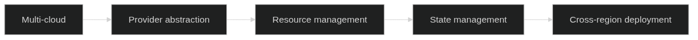

Cloud Architecture as Code
Cloud Architecture as Code represents The natural utvecklingen of Architecture as Code in cloud-based environments. by utnyttja cloud providers' APIs and services can organisationer create skalbara, motståndskraftiga and kostnadseffektiva arkitekturer helt through Architecture as Code. Which vi saw in chapter 2 about Fundamental principles, is This metod Fundamental for modern organisationer as strävar efter digital omvandling and operativ excellence.

Diagram illustrerar progression from multi-cloud environments through provider abstraction and resource management to state management and cross-region deployment capabilities. This progression enables The typ of skalbar Architecture as Code-automation as vi will to fordjupa in chapter 4 about CI/CD-pipelines and The organizational change as diskuteras in chapter 10.
Molnleverantörers ekosystem for Architecture as Code
Swedish organizations face A rich selection of cloud providers, var and a with their own styrkor and specialiseringar. to achieve successful cloud adoption must organisationer understand each leverantörs unique capabilities and how These can utnyttjas through Architecture as Code approaches.
Amazon Web Services (AWS) and Swedish organizations
AWS dominerar The globala molnmarknaden and has etablerat strong whenvaro in Sverige through datacenters in Stockholm-regionen. For Swedish organizations offers AWS comprehensive services as is particularly relevanta for lokala compliance-requirements and performance-behov.
AWS CloudFormation forms AWS:s native Infrastructure as Code-service as enables declarative definition of AWS-resurser through JSON or YAML templates. CloudFormation handles resource dependencies automatically and ensures infrastructure deployments is reproducerbara and återställningscapable:
For a detaljerad CloudFormation template as implement VPC configuration for Swedish organizations with GDPR compliance, se 07_CODE_1: VPC Konfiguration for Swedish organizations in Appendix A.
AWS CDK (Cloud Development Kit) revolutionerar Architecture as Code by enable definition of cloud resources with programmeringsspråk that TypeScript, Python, Java and C#. For svenska utvecklarteam as redan behärskar These language reduces CDK learning curve and enables reuse of existing programmeringskunskaper:
// cdk/svenska-org-infrastructure.ts
import * as cdk from 'aws-cdk-lib';
import * as ec2 from 'aws-cdk-lib/aws-ec2';
import * as rds from 'aws-cdk-lib/aws-rds';
import * as logs from 'aws-cdk-lib/aws-logs';
import * as kms from 'aws-cdk-lib/aws-kms';
import { Construct } from 'constructs';
export interface SvenskaOrgInfrastructureProps extends cdk.StackProps {
environment: 'development' | 'staging' | 'production';
dataClassification: 'public' | 'internal' | 'confidential' | 'restricted';
complianceRequirements: string[];
costCenter: string;
organizationalUnit: string;
}
export class SvenskaOrgInfrastructureStack extends cdk.Stack {
constructor(scope: Construct, id: string, props: SvenskaOrgInfrastructureProps) {
super(scope, id, props);
// Definiera common tags for all resurser
const commonTags = {
Environment: props.environment,
DataClassification: props.dataClassification,
CostCenter: props.costCenter,
OrganizationalUnit: props.organizationalUnit,
Country: 'Sweden',
Region: 'eu-north-1',
ComplianceRequirements: props.complianceRequirements.join(','),
ManagedBy: 'AWS-CDK',
LastUpdated: new Date().toISOString().split('T')[0]
};
// Skapa VPC with svenska security requirements
const vpc = new ec2.Vpc(this, 'SvenskaOrgVPC', {
cidr: props.environment === 'production' ? '10.0.0.0/16' : '10.1.0.0/16',
maxAzs: props.environment === 'production' ? 3 : 2,
enableDnsHostnames: true,
enableDnsSupport: true,
subnetConfiguration: [
{
cidrMask: 24,
name: 'Public',
subnetType: ec2.SubnetType.PUBLIC,
},
{
cidrMask: 24,
name: 'Private',
subnetType: ec2.SubnetType.PRIVATE_WITH_EGRESS,
},
{
cidrMask: 24,
name: 'Database',
subnetType: ec2.SubnetType.PRIVATE_ISOLATED,
}
],
flowLogs: {
cloudwatch: {
logRetention: logs.RetentionDays.THREE_MONTHS
}
}
});
// Tillämpa common tags at VPC
Object.entries(commonTags).forEach(([key, value]) => {
cdk.Tags.of(vpc).add(key, value);
});
// GDPR-compliant KMS key for databaskryptering
const databaseEncryptionKey = new kms.Key(this, 'DatabaseEncryptionKey', {
description: 'KMS key for databaskryptering according to GDPR-requirements',
enableKeyRotation: true,
removalPolicy: props.environment === 'production' ?
cdk.RemovalPolicy.RETAIN : cdk.RemovalPolicy.DESTROY
});
// Database subnet group for isolerad databas-tier
const dbSubnetGroup = new rds.SubnetGroup(this, 'DatabaseSubnetGroup', {
vpc,
description: 'Subnet group for GDPR-compliant databaser',
vpcSubnets: {
subnetType: ec2.SubnetType.PRIVATE_ISOLATED
}
});
// RDS instans with svenska security requirements
if (props.environment === 'production') {
const database = new rds.DatabaseInstance(this, 'PrimaryDatabase', {
engine: rds.DatabaseInstanceEngine.postgres({
version: rds.PostgresEngineVersion.VER_15_4
}),
instanceType: ec2.InstanceType.of(ec2.InstanceClass.R5, ec2.InstanceSize.LARGE),
vpc,
subnetGroup: dbSubnetGroup,
storageEncrypted: true,
storageEncryptionKey: databaseEncryptionKey,
backupRetention: cdk.Duration.days(30),
deletionProtection: true,
deleteAutomatedBackups: false,
enablePerformanceInsights: true,
monitoringInterval: cdk.Duration.seconds(60),
cloudwatchLogsExports: ['postgresql'],
parameters: {
// Svenska tidszon and locale
'timezone': 'Europe/Stockholm',
'lc_messages': 'sv_SE.UTF-8',
'lc_monetary': 'sv_SE.UTF-8',
'lc_numeric': 'sv_SE.UTF-8',
'lc_time': 'sv_SE.UTF-8',
// GDPR-relevanta inställningar
'log_statement': 'all',
'log_min_duration_statement': '0',
'shared_preload_libraries': 'pg_stat_statements',
// Säkerhetsinställningar
'ssl': 'on',
'ssl_ciphers': 'HIGH:!aNULL:!MD5',
'ssl_prefer_server_ciphers': 'on'
}
});
// Tillämpa svenska compliance tags
cdk.Tags.of(database).add('DataResidency', 'Sweden');
cdk.Tags.of(database).add('GDPRCompliant', 'true');
cdk.Tags.of(database).add('ISO27001Compliant', 'true');
cdk.Tags.of(database).add('BackupRetention', '30-days');
}
// Security groups with svenska security standards
const webSecurityGroup = new ec2.SecurityGroup(this, 'WebSecurityGroup', {
vpc,
description: 'Security group for web tier according to svenska security requirements',
allowAllOutbound: false
});
// Begränsa inkommande trafik to HTTPS endast
webSecurityGroup.addIngressRule(
ec2.Peer.anyIpv4(),
ec2.Port.tcp(443),
'HTTPS from internet'
);
// Tillåt utgående trafik endast to necessary services
webSecurityGroup.addEgressRule(
ec2.Peer.anyIpv4(),
ec2.Port.tcp(443),
'HTTPS utgående'
);
// Application security group with restriktiv access
const appSecurityGroup = new ec2.SecurityGroup(this, 'AppSecurityGroup', {
vpc,
description: 'Security group for application tier',
allowAllOutbound: false
});
appSecurityGroup.addIngressRule(
webSecurityGroup,
ec2.Port.tcp(8080),
'Trafik from web tier'
);
// Database security group - endast from app tier
const dbSecurityGroup = new ec2.SecurityGroup(this, 'DatabaseSecurityGroup', {
vpc,
description: 'Security group for database tier with minimal access',
allowAllOutbound: false
});
dbSecurityGroup.addIngressRule(
appSecurityGroup,
ec2.Port.tcp(5432),
'PostgreSQL from application tier'
);
// VPC Endpoints for AWS services (undviker data exfiltration via internet)
const s3Endpoint = vpc.addGatewayEndpoint('S3Endpoint', {
service: ec2.GatewayVpcEndpointAwsService.S3
});
const ec2Endpoint = vpc.addInterfaceEndpoint('EC2Endpoint', {
service: ec2.InterfaceVpcEndpointAwsService.EC2,
privateDnsEnabled: true
});
const rdsEndpoint = vpc.addInterfaceEndpoint('RDSEndpoint', {
service: ec2.InterfaceVpcEndpointAwsService.RDS,
privateDnsEnabled: true
});
// CloudWatch for monitoring and GDPR compliance logging
const monitoringLogGroup = new logs.LogGroup(this, 'MonitoringLogGroup', {
logGroupName: `/aws/svenska-org/${props.environment}/monitoring`,
retention: logs.RetentionDays.THREE_MONTHS,
encryptionKey: databaseEncryptionKey
});
// Outputs for cross-stack references
new cdk.CfnOutput(this, 'VPCId', {
value: vpc.vpcId,
description: 'VPC ID for svenska organisationen',
exportName: `${this.stackName}-VPC-ID`
});
new cdk.CfnOutput(this, 'ComplianceStatus', {
value: JSON.stringify({
gdprCompliant: props.complianceRequirements.includes('gdpr'),
iso27001Compliant: props.complianceRequirements.includes('iso27001'),
dataResidency: 'Sweden',
encryptionEnabled: true,
auditLoggingEnabled: true
}),
description: 'Compliance status for deployed infrastructure'
});
}
// Metod to lägga to svenska holidayschedules for cost optimization
addSwedishHolidayScheduling(resource: cdk.Resource) {
const swedishHolidays = [
'2024-01-01', // Nyårsdagen
'2024-01-06', // Trettondedag jul
'2024-03-29', // Långfredagen
'2024-04-01', // Annandag påsk
'2024-05-01', // Första maj
'2024-05-09', // Kristi himmelsfärdsdag
'2024-05-20', // Annandag pingst
'2024-06-21', // Midsommarafton
'2024-06-22', // Midsommardagen
'2024-11-02', // all helgons dag
'2024-12-24', // Julafton
'2024-12-25', // Juldagen
'2024-12-26', // Annandag jul
'2024-12-31' // Nyårsafton
];
cdk.Tags.of(resource).add('SwedishHolidays', swedishHolidays.join(','));
cdk.Tags.of(resource).add('CostOptimization', 'SwedishSchedule');
}
}
// Usage example
const app = new cdk.App();
new SvenskaOrgInfrastructureStack(app, 'SvenskaOrgDev', {
environment: 'development',
dataClassification: 'internal',
complianceRequirements: ['gdpr'],
costCenter: 'CC-1001',
organizationalUnit: 'IT-Development',
env: {
account: process.env.CDK_DEFAULT_ACCOUNT,
region: 'eu-north-1'
}
});
new SvenskaOrgInfrastructureStack(app, 'SvenskaOrgProd', {
environment: 'production',
dataClassification: 'confidential',
complianceRequirements: ['gdpr', 'iso27001'],
costCenter: 'CC-2001',
organizationalUnit: 'IT-Production',
env: {
account: process.env.CDK_DEFAULT_ACCOUNT,
region: 'eu-north-1'
}
});
Microsoft Azure for Swedish organizations
Microsoft Azure has developed strong position in Sverige, particularly within the public sector and traditional enterprise-organisationer. Azure Resource Manager (ARM) templates and Bicep forms Microsofts primary Architecture as Code offerings.
Azure Resource Manager (ARM) Templates enables declarative definition of Azure-resurser through JSON-baserade templates. For Swedish organizations as redan uses Microsoft-produkter forms ARM templates a naturlig extension of existing Microsoft-skickigheter:
{
"$schema": "https://schema.management.azure.com/schemas/2019-04-01/deploymentTemplate.json#",
"contentVersion": "1.0.0.0",
"metadata": {
"description": "Azure infrastructure for Swedish organizations with GDPR compliance",
"author": "Svenska IT-avdelningen"
},
"parameters": {
"environmentType": {
"type": "string",
"defaultValue": "development",
"allowedValues": ["development", "staging", "production"],
"metadata": {
"description": "Miljötyp for deployment"
}
},
"dataClassification": {
"type": "string",
"defaultValue": "internal",
"allowedValues": ["public", "internal", "confidential", "restricted"],
"metadata": {
"description": "Dataklassificering according to svenska security standards"
}
},
"organizationName": {
"type": "string",
"defaultValue": "svenska-org",
"metadata": {
"description": "Organisationsnamn for resource naming"
}
},
"costCenter": {
"type": "string",
"metadata": {
"description": "Kostnadscenter for fakturering"
}
},
"gdprCompliance": {
"type": "bool",
"defaultValue": true,
"metadata": {
"description": "Aktivera GDPR compliance features"
}
}
},
"variables": {
"resourcePrefix": "[concat(parameters('organizationName'), '-', parameters('environmentType'))]",
"location": "Sweden Central",
"vnetName": "[concat(variables('resourcePrefix'), '-vnet')]",
"subnetNames": {
"web": "[concat(variables('resourcePrefix'), '-web-subnet')]",
"app": "[concat(variables('resourcePrefix'), '-app-subnet')]",
"database": "[concat(variables('resourcePrefix'), '-db-subnet')]"
},
"nsgNames": {
"web": "[concat(variables('resourcePrefix'), '-web-nsg')]",
"app": "[concat(variables('resourcePrefix'), '-app-nsg')]",
"database": "[concat(variables('resourcePrefix'), '-db-nsg')]"
},
"commonTags": {
"Environment": "[parameters('environmentType')]",
"DataClassification": "[parameters('dataClassification')]",
"CostCenter": "[parameters('costCenter')]",
"Country": "Sweden",
"Region": "Sweden Central",
"GDPRCompliant": "[string(parameters('gdprCompliance'))]",
"ManagedBy": "ARM-Template",
"LastDeployed": "[utcNow()]"
}
},
"resources": [
{
"type": "Microsoft.Network/virtualNetworks",
"apiVersion": "2023-04-01",
"name": "[variables('vnetName')]",
"location": "[variables('location')]",
"tags": "[variables('commonTags')]",
"properties": {
"addressSpace": {
"addressPrefixes": [
"[if(equals(parameters('environmentType'), 'production'), '10.0.0.0/16', '10.1.0.0/16')]"
]
},
"enableDdosProtection": "[equals(parameters('environmentType'), 'production')]",
"subnets": [
{
"name": "[variables('subnetNames').web]",
"properties": {
"addressPrefix": "[if(equals(parameters('environmentType'), 'production'), '10.0.1.0/24', '10.1.1.0/24')]",
"networkSecurityGroup": {
"id": "[resourceId('Microsoft.Network/networkSecurityGroups', variables('nsgNames').web)]"
},
"serviceEndpoints": [
{
"service": "Microsoft.Storage",
"locations": ["Sweden Central", "Sweden South"]
},
{
"service": "Microsoft.KeyVault",
"locations": ["Sweden Central", "Sweden South"]
}
]
}
},
{
"name": "[variables('subnetNames').app]",
"properties": {
"addressPrefix": "[if(equals(parameters('environmentType'), 'production'), '10.0.2.0/24', '10.1.2.0/24')]",
"networkSecurityGroup": {
"id": "[resourceId('Microsoft.Network/networkSecurityGroups', variables('nsgNames').app)]"
},
"serviceEndpoints": [
{
"service": "Microsoft.Sql",
"locations": ["Sweden Central", "Sweden South"]
}
]
}
},
{
"name": "[variables('subnetNames').database]",
"properties": {
"addressPrefix": "[if(equals(parameters('environmentType'), 'production'), '10.0.3.0/24', '10.1.3.0/24')]",
"networkSecurityGroup": {
"id": "[resourceId('Microsoft.Network/networkSecurityGroups', variables('nsgNames').database)]"
},
"delegations": [
{
"name": "Microsoft.DBforPostgreSQL/flexibleServers",
"properties": {
"serviceName": "Microsoft.DBforPostgreSQL/flexibleServers"
}
}
]
}
}
]
},
"dependsOn": [
"[resourceId('Microsoft.Network/networkSecurityGroups', variables('nsgNames').web)]",
"[resourceId('Microsoft.Network/networkSecurityGroups', variables('nsgNames').app)]",
"[resourceId('Microsoft.Network/networkSecurityGroups', variables('nsgNames').database)]"
]
},
{
"type": "Microsoft.Network/networkSecurityGroups",
"apiVersion": "2023-04-01",
"name": "[variables('nsgNames').web]",
"location": "[variables('location')]",
"tags": "[union(variables('commonTags'), createObject('Tier', 'Web'))]",
"properties": {
"securityRules": [
{
"name": "Allow-HTTPS-Inbound",
"properties": {
"description": "Tillåt HTTPS trafik from internet",
"protocol": "Tcp",
"sourcePortRange": "*",
"destinationPortRange": "443",
"sourceAddressPrefix": "Internet",
"destinationAddressPrefix": "*",
"access": "Allow",
"priority": 100,
"direction": "Inbound"
}
},
{
"name": "Allow-HTTP-Redirect",
"properties": {
"description": "Tillåt HTTP for redirect to HTTPS",
"protocol": "Tcp",
"sourcePortRange": "*",
"destinationPortRange": "80",
"sourceAddressPrefix": "Internet",
"destinationAddressPrefix": "*",
"access": "Allow",
"priority": 110,
"direction": "Inbound"
}
},
{
"name": "Deny-All-Inbound",
"properties": {
"description": "Neka all other inkommande trafik",
"protocol": "*",
"sourcePortRange": "*",
"destinationPortRange": "*",
"sourceAddressPrefix": "*",
"destinationAddressPrefix": "*",
"access": "Deny",
"priority": 4096,
"direction": "Inbound"
}
}
]
}
},
{
"condition": "[parameters('gdprCompliance')]",
"type": "Microsoft.KeyVault/vaults",
"apiVersion": "2023-02-01",
"name": "[concat(variables('resourcePrefix'), '-kv')]",
"location": "[variables('location')]",
"tags": "[union(variables('commonTags'), createObject('Purpose', 'GDPR-Compliance'))]",
"properties": {
"sku": {
"family": "A",
"name": "standard"
},
"tenantId": "[subscription().tenantId]",
"enabledForDeployment": false,
"enabledForDiskEncryption": true,
"enabledForTemplateDeployment": true,
"enableSoftDelete": true,
"softDeleteRetentionInDays": 90,
"enablePurgeProtection": "[equals(parameters('environmentType'), 'production')]",
"enableRbacAuthorization": true,
"networkAcls": {
"defaultAction": "Deny",
"bypass": "AzureServices",
"virtualNetworkRules": [
{
"id": "[resourceId('Microsoft.Network/virtualNetworks/subnets', variables('vnetName'), variables('subnetNames').app)]",
"ignoreMissingVnetServiceEndpoint": false
}
]
}
},
"dependsOn": [
"[resourceId('Microsoft.Network/virtualNetworks', variables('vnetName'))]"
]
}
],
"outputs": {
"vnetId": {
"type": "string",
"value": "[resourceId('Microsoft.Network/virtualNetworks', variables('vnetName'))]",
"metadata": {
"description": "Resource ID for the createde virtual network"
}
},
"subnetIds": {
"type": "object",
"value": {
"web": "[resourceId('Microsoft.Network/virtualNetworks/subnets', variables('vnetName'), variables('subnetNames').web)]",
"app": "[resourceId('Microsoft.Network/virtualNetworks/subnets', variables('vnetName'), variables('subnetNames').app)]",
"database": "[resourceId('Microsoft.Network/virtualNetworks/subnets', variables('vnetName'), variables('subnetNames').database)]"
},
"metadata": {
"description": "Resource IDs for all createde subnets"
}
},
"complianceStatus": {
"type": "object",
"value": {
"gdprCompliant": "[parameters('gdprCompliance')]",
"dataResidency": "Sweden",
"encryptionEnabled": true,
"auditLoggingEnabled": true,
"networkSegmentation": true,
"accessControlEnabled": true
},
"metadata": {
"description": "Compliance status for deployed infrastructure"
}
}
}
}
Azure Bicep represents next generation of ARM templates with improved syntax and developer experience. Bicep kompilerar to ARM templates but offers mer läsbar and maintainable code:
// bicep/svenska-org-infrastructure.bicep
// Azure Bicep for Swedish organizations with GDPR compliance
@description('Miljötyp for deployment')
@allowed(['development', 'staging', 'production'])
param environmentType string = 'development'
@description('Dataklassificering according to svenska security standards')
@allowed(['public', 'internal', 'confidential', 'restricted'])
param dataClassification string = 'internal'
@description('Organisationsnamn for resource naming')
param organizationName string = 'svenska-org'
@description('Kostnadscenter for fakturering')
param costCenter string
@description('Aktivera GDPR compliance features')
param gdprCompliance bool = true
@description('Lista over compliance-requirements')
param complianceRequirements array = ['gdpr']
// Variabler for konsistent naming and configuration
var resourcePrefix = '${organizationName}-${environmentType}'
var location = 'Sweden Central'
var isProduction = environmentType == 'production'
// Common tags for all resurser
var commonTags = {
Environment: environmentType
DataClassification: dataClassification
CostCenter: costCenter
Country: 'Sweden'
Region: 'Sweden Central'
GDPRCompliant: string(gdprCompliance)
ComplianceRequirements: join(complianceRequirements, ',')
ManagedBy: 'Azure-Bicep'
LastDeployed: utcNow('yyyy-MM-dd')
}
// Log Analytics Workspace for Swedish organizations
resource logAnalytics 'Microsoft.OperationalInsights/workspaces@2023-09-01' = if (gdprCompliance) {
name: '${resourcePrefix}-law'
location: location
tags: union(commonTags, {
Purpose: 'GDPR-Compliance-Logging'
})
properties: {
sku: {
name: 'PerGB2018'
}
retentionInDays: isProduction ? 90 : 30
features: {
searchVersion: 1
legacy: false
enableLogAccessUsingOnlyResourcePermissions: true
}
workspaceCapping: {
dailyQuotaGb: isProduction ? 50 : 10
}
publicNetworkAccessForIngestion: 'Disabled'
publicNetworkAccessForQuery: 'Disabled'
}
}
// Key Vault for secure handling of secrets and encryption keys
resource keyVault 'Microsoft.KeyVault/vaults@2023-02-01' = if (gdprCompliance) {
name: '${resourcePrefix}-kv'
location: location
tags: union(commonTags, {
Purpose: 'Secret-Management'
})
properties: {
sku: {
family: 'A'
name: 'standard'
}
tenantId: subscription().tenantId
enabledForDeployment: false
enabledForDiskEncryption: true
enabledForTemplateDeployment: true
enableSoftDelete: true
softDeleteRetentionInDays: 90
enablePurgeProtection: isProduction
enableRbacAuthorization: true
networkAcls: {
defaultAction: 'Deny'
bypass: 'AzureServices'
}
}
}
// Virtual Network with svenska security requirements
resource vnet 'Microsoft.Network/virtualNetworks@2023-04-01' = {
name: '${resourcePrefix}-vnet'
location: location
tags: commonTags
properties: {
addressSpace: {
addressPrefixes: [
isProduction ? '10.0.0.0/16' : '10.1.0.0/16'
]
}
enableDdosProtection: isProduction
subnets: [
{
name: 'web-subnet'
properties: {
addressPrefix: isProduction ? '10.0.1.0/24' : '10.1.1.0/24'
networkSecurityGroup: {
id: webNsg.id
}
serviceEndpoints: [
{
service: 'Microsoft.Storage'
locations: ['Sweden Central', 'Sweden South']
}
{
service: 'Microsoft.KeyVault'
locations: ['Sweden Central', 'Sweden South']
}
]
}
}
{
name: 'app-subnet'
properties: {
addressPrefix: isProduction ? '10.0.2.0/24' : '10.1.2.0/24'
networkSecurityGroup: {
id: appNsg.id
}
serviceEndpoints: [
{
service: 'Microsoft.Sql'
locations: ['Sweden Central', 'Sweden South']
}
]
}
}
{
name: 'database-subnet'
properties: {
addressPrefix: isProduction ? '10.0.3.0/24' : '10.1.3.0/24'
networkSecurityGroup: {
id: dbNsg.id
}
delegations: [
{
name: 'Microsoft.DBforPostgreSQL/flexibleServers'
properties: {
serviceName: 'Microsoft.DBforPostgreSQL/flexibleServers'
}
}
]
}
}
]
}
}
// Network Security Groups with restriktiva säkerhetsregler
resource webNsg 'Microsoft.Network/networkSecurityGroups@2023-04-01' = {
name: '${resourcePrefix}-web-nsg'
location: location
tags: union(commonTags, { Tier: 'Web' })
properties: {
securityRules: [
{
name: 'Allow-HTTPS-Inbound'
properties: {
description: 'Tillåt HTTPS trafik from internet'
protocol: 'Tcp'
sourcePortRange: '*'
destinationPortRange: '443'
sourceAddressPrefix: 'Internet'
destinationAddressPrefix: '*'
access: 'Allow'
priority: 100
direction: 'Inbound'
}
}
{
name: 'Allow-HTTP-Redirect'
properties: {
description: 'Tillåt HTTP for redirect to HTTPS'
protocol: 'Tcp'
sourcePortRange: '*'
destinationPortRange: '80'
sourceAddressPrefix: 'Internet'
destinationAddressPrefix: '*'
access: 'Allow'
priority: 110
direction: 'Inbound'
}
}
]
}
}
resource appNsg 'Microsoft.Network/networkSecurityGroups@2023-04-01' = {
name: '${resourcePrefix}-app-nsg'
location: location
tags: union(commonTags, { Tier: 'Application' })
properties: {
securityRules: [
{
name: 'Allow-Web-To-App'
properties: {
description: 'Tillåt trafik from web tier to app tier'
protocol: 'Tcp'
sourcePortRange: '*'
destinationPortRange: '8080'
sourceAddressPrefix: isProduction ? '10.0.1.0/24' : '10.1.1.0/24'
destinationAddressPrefix: '*'
access: 'Allow'
priority: 100
direction: 'Inbound'
}
}
]
}
}
resource dbNsg 'Microsoft.Network/networkSecurityGroups@2023-04-01' = {
name: '${resourcePrefix}-db-nsg'
location: location
tags: union(commonTags, { Tier: 'Database' })
properties: {
securityRules: [
{
name: 'Allow-App-To-DB'
properties: {
description: 'Tillåt databasanslutningar from app tier'
protocol: 'Tcp'
sourcePortRange: '*'
destinationPortRange: '5432'
sourceAddressPrefix: isProduction ? '10.0.2.0/24' : '10.1.2.0/24'
destinationAddressPrefix: '*'
access: 'Allow'
priority: 100
direction: 'Inbound'
}
}
]
}
}
// PostgreSQL Flexible Server for GDPR-compliant data storage
resource postgresServer 'Microsoft.DBforPostgreSQL/flexibleServers@2023-06-01-preview' = if (isProduction) {
name: '${resourcePrefix}-postgres'
location: location
tags: union(commonTags, {
DatabaseEngine: 'PostgreSQL'
DataResidency: 'Sweden'
})
sku: {
name: 'Standard_D4s_v3'
tier: 'GeneralPurpose'
}
properties: {
administratorLogin: 'pgadmin'
administratorLoginPassword: 'TempPassword123!' // Kommer to changes via Key Vault
version: '15'
storage: {
storageSizeGB: 128
autoGrow: 'Enabled'
}
backup: {
backupRetentionDays: 35
geoRedundantBackup: 'Enabled'
}
network: {
delegatedSubnetResourceId: '${vnet.id}/subnets/database-subnet'
privateDnsZoneArmResourceId: postgresPrivateDnsZone.id
}
highAvailability: {
mode: 'ZoneRedundant'
}
maintenanceWindow: {
customWindow: 'Enabled'
dayOfWeek: 6 // Lördag
startHour: 2
startMinute: 0
}
}
}
// Private DNS Zone for PostgreSQL
resource postgresPrivateDnsZone 'Microsoft.Network/privateDnsZones@2020-06-01' = if (isProduction) {
name: '${resourcePrefix}-postgres.private.postgres.database.azure.com'
location: 'global'
tags: commonTags
}
resource postgresPrivateDnsZoneVnetLink 'Microsoft.Network/privateDnsZones/virtualNetworkLinks@2020-06-01' = if (isProduction) {
parent: postgresPrivateDnsZone
name: '${resourcePrefix}-postgres-vnet-link'
location: 'global'
properties: {
registrationEnabled: false
virtualNetwork: {
id: vnet.id
}
}
}
// Diagnostic Settings for GDPR compliance logging
resource vnetDiagnostics 'Microsoft.Insights/diagnosticSettings@2021-05-01-preview' = if (gdprCompliance) {
name: '${resourcePrefix}-vnet-diagnostics'
scope: vnet
properties: {
workspaceId: logAnalytics.id
logs: [
{
categoryGroup: 'allLogs'
enabled: true
retentionPolicy: {
enabled: true
days: isProduction ? 90 : 30
}
}
]
metrics: [
{
category: 'AllMetrics'
enabled: true
retentionPolicy: {
enabled: true
days: isProduction ? 90 : 30
}
}
]
}
}
// Outputs for cross-template references
output vnetId string = vnet.id
output subnetIds object = {
web: '${vnet.id}/subnets/web-subnet'
app: '${vnet.id}/subnets/app-subnet'
database: '${vnet.id}/subnets/database-subnet'
}
output complianceStatus object = {
gdprCompliant: gdprCompliance
dataResidency: 'Sweden'
encryptionEnabled: true
auditLoggingEnabled: gdprCompliance
networkSegmentation: true
accessControlEnabled: true
backupRetention: isProduction ? '35-days' : '7-days'
}
output keyVaultId string = gdprCompliance ? keyVault.id : ''
output logAnalyticsWorkspaceId string = gdprCompliance ? logAnalytics.id : ''
Google Cloud Plattform for svenska innovationsorganisationer
Google Cloud Plattform (GCP) attraherar svenska tech-companies and startups through sina machine learning capabilities and innovativa services. Google Cloud Deployment Manager and Terraform Google Provider forms primary Architecture as Code tools for GCP.
Google Cloud Deployment Manager uses YAML or Python for Architecture as Code definitions and integrerar naturligt with Google Cloud services:
# gcp/svenska-org-infrastructure.yaml
# Deployment Manager template for Swedish organizations
resources:
# VPC Network for svensk data residency
- name: svenska-org-vpc
type: compute.v1.network
properties:
description: "VPC for Swedish organizations with GDPR compliance"
autoCreateSubnetworks: false
routingConfig:
routingMode: REGIONAL
metadata:
labels:
environment: $(ref.environment)
data-classification: $(ref.dataClassification)
country: sweden
gdpr-compliant: "true"
# Subnets with svenska regionrequirements
- name: web-subnet
type: compute.v1.subnetwork
properties:
description: "Web tier subnet for svenska applications"
network: $(ref.svenska-org-vpc.selfLink)
ipCidrRange: "10.0.1.0/24"
region: europe-north1
enableFlowLogs: true
logConfig:
enable: true
flowSampling: 1.0
aggregationInterval: INTERVAL_5_SEC
metadata: INCLUDE_ALL_METADATA
secondaryIpRanges:
- rangeName: pods
ipCidrRange: "10.1.0.0/16"
- rangeName: services
ipCidrRange: "10.2.0.0/20"
- name: app-subnet
type: compute.v1.subnetwork
properties:
description: "Application tier subnet"
network: $(ref.svenska-org-vpc.selfLink)
ipCidrRange: "10.0.2.0/24"
region: europe-north1
enableFlowLogs: true
logConfig:
enable: true
flowSampling: 1.0
aggregationInterval: INTERVAL_5_SEC
- name: database-subnet
type: compute.v1.subnetwork
properties:
description: "Database tier subnet with privat åtkomst"
network: $(ref.svenska-org-vpc.selfLink)
ipCidrRange: "10.0.3.0/24"
region: europe-north1
enableFlowLogs: true
purpose: PRIVATE_SERVICE_CONNECT
# Cloud SQL for GDPR-compliant databaser
- name: svenska-org-postgres
type: sqladmin.v1beta4.instance
properties:
name: svenska-org-postgres-$(ref.environment)
region: europe-north1
databaseVersion: POSTGRES_15
settings:
tier: db-custom-4-16384
edition: ENTERPRISE
availabilityType: REGIONAL
dataDiskType: PD_SSD
dataDiskSizeGb: 100
storageAutoResize: true
storageAutoResizeLimit: 500
# Svenska tidszon and locale
databaseFlags:
- name: timezone
value: "Europe/Stockholm"
- name: lc_messages
value: "sv_SE.UTF-8"
- name: log_statement
value: "all"
- name: log_min_duration_statement
value: "0"
- name: ssl
value: "on"
# Backup and recovery for svenska requirements
backupConfiguration:
enabled: true
startTime: "02:00"
location: "europe-north1"
backupRetentionSettings:
retentionUnit: COUNT
retainedBackups: 30
transactionLogRetentionDays: 7
pointInTimeRecoveryEnabled: true
# Säkerhetsinställningar
ipConfiguration:
ipv4Enabled: false
privateNetwork: $(ref.svenska-org-vpc.selfLink)
enablePrivatePathForGoogleCloudServices: true
authorizedNetworks: []
requireSsl: true
# Maintenance for svenska arbetstider
maintenanceWindow:
hour: 2
day: 6 # Lördag
updateTrack: stable
deletionProtectionEnabled: true
# GDPR compliance logging
insights:
queryInsightsEnabled: true
recordApplicationTags: true
recordClientAddress: true
queryStringLength: 4500
queryPlansPerMinute: 20
# Cloud KMS for encryption of känslig data
- name: svenska-org-keyring
type: cloudkms.v1.keyRing
properties:
parent: projects/$(env.project)/locations/europe-north1
keyRingId: svenska-org-keyring-$(ref.environment)
- name: database-encryption-key
type: cloudkms.v1.cryptoKey
properties:
parent: $(ref.svenska-org-keyring.name)
cryptoKeyId: database-encryption-key
purpose: ENCRYPT_DECRYPT
versionTemplate:
algorithm: GOOGLE_SYMMETRIC_ENCRYPTION
protectionLevel: SOFTWARE
rotationPeriod: 7776000s # 90 dagar
nextRotationTime: $(ref.nextRotationTime)
# Firewall rules for secure nätverkstrafik
- name: allow-web-to-app
type: compute.v1.firewall
properties:
description: "Tillåt HTTPS trafik from web to app tier"
network: $(ref.svenska-org-vpc.selfLink)
direction: INGRESS
priority: 1000
sourceRanges:
- "10.0.1.0/24"
targetTags:
- "app-server"
allowed:
- IPProtocol: tcp
ports: ["8080"]
- name: allow-app-to-database
type: compute.v1.firewall
properties:
description: "Tillåt databasanslutningar from app tier"
network: $(ref.svenska-org-vpc.selfLink)
direction: INGRESS
priority: 1000
sourceRanges:
- "10.0.2.0/24"
targetTags:
- "database-server"
allowed:
- IPProtocol: tcp
ports: ["5432"]
- name: deny-all-ingress
type: compute.v1.firewall
properties:
description: "Neka all other inkommande trafik"
network: $(ref.svenska-org-vpc.selfLink)
direction: INGRESS
priority: 65534
sourceRanges:
- "0.0.0.0/0"
denied:
- IPProtocol: all
# Cloud Logging for GDPR compliance
- name: svenska-org-log-sink
type: logging.v2.sink
properties:
name: svenska-org-compliance-sink
destination: storage.googleapis.com/svenska-org-audit-logs-$(ref.environment)
filter: |
resource.type="gce_instance" OR
resource.type="cloud_sql_database" OR
resource.type="gce_network" OR
protoPayload.authenticationInfo.principalEmail!=""
uniqueWriterIdentity: true
# Cloud Storage for audit logs with svenska data residency
- name: svenska-org-audit-logs
type: storage.v1.bucket
properties:
name: svenska-org-audit-logs-$(ref.environment)
location: EUROPE-NORTH1
storageClass: STANDARD
versioning:
enabled: true
lifecycle:
rule:
- action:
type: SetStorageClass
storageClass: NEARLINE
condition:
age: 30
- action:
type: SetStorageClass
storageClass: COLDLINE
condition:
age: 90
- action:
type: Delete
condition:
age: 2555 # 7 år for svenska requirements
retentionPolicy:
retentionPeriod: 220752000 # 7 år in sekunder
iamConfiguration:
uniformBucketLevelAccess:
enabled: true
encryption:
defaultKmsKeyName: $(ref.database-encryption-key.name)
outputs:
- name: vpcId
value: $(ref.svenska-org-vpc.id)
- name: subnetIds
value:
web: $(ref.web-subnet.id)
app: $(ref.app-subnet.id)
database: $(ref.database-subnet.id)
- name: complianceStatus
value:
gdprCompliant: true
dataResidency: "Sweden"
encryptionEnabled: true
auditLoggingEnabled: true
backupRetention: "30-days"
logRetention: "7-years"
Cloud-native architecture as code patterns
Cloud-native Infrastructure as Code patterns utnyttjar molnspecific services and capabilities to create optimala arkitekturer. These patterns includes serverless computing, managed databases, auto-scaling groups, and event-driven architectures as eliminates traditional infrastructure management.
Microservices-baserade arkitekturer implementeras through containerorkestrering, service mesh, and API gateways definierade as code. This enables loose coupling, independent scaling, and teknologidiversifiering while operationell komplexitet is managed through automation.
Container-First arkitekturpattern
Modern molnarkitektur builds on containerisering as fundamental abstraktion for applikationsdeployment. For Swedish organizations means This to infrastructure definitions focuses on container orchestration platforms that Kubernetes, AWS ECS, Azure Container Instances, or Google Cloud Run:
# terraform/container-platform.tf
# Container platform for Swedish organizations
resource "kubernetes_namespace" "application_namespace" {
count = length(var.environments)
metadata {
name = "${var.organization_name}-${var.environments[count.index]}"
labels = {
"app.kubernetes.io/managed-by" = "terraform"
"svenska.se/environment" = var.environments[count.index]
"svenska.se/data-classification" = var.data_classification
"svenska.se/cost-center" = var.cost_center
"svenska.se/gdpr-compliant" = "true"
"svenska.se/backup-policy" = var.environments[count.index] == "production" ? "daily" : "weekly"
}
annotations = {
"svenska.se/contact-email" = var.contact_email
"svenska.se/created-date" = timestamp()
"svenska.se/compliance-review" = var.compliance_review_date
}
}
}
# Resource Quotas for kostnadskontroll and resource governance
resource "kubernetes_resource_quota" "namespace_quota" {
count = length(var.environments)
metadata {
name = "${var.organization_name}-${var.environments[count.index]}-quota"
namespace = kubernetes_namespace.application_namespace[count.index].metadata[0].name
}
spec {
hard = {
"requests.cpu" = var.environments[count.index] == "production" ? "8" : "2"
"requests.memory" = var.environments[count.index] == "production" ? "16Gi" : "4Gi"
"limits.cpu" = var.environments[count.index] == "production" ? "16" : "4"
"limits.memory" = var.environments[count.index] == "production" ? "32Gi" : "8Gi"
"persistentvolumeclaims" = var.environments[count.index] == "production" ? "10" : "3"
"requests.storage" = var.environments[count.index] == "production" ? "100Gi" : "20Gi"
"count/pods" = var.environments[count.index] == "production" ? "50" : "10"
"count/services" = var.environments[count.index] == "production" ? "20" : "5"
}
}
}
# Network Policies for mikrosegmentering and security
resource "kubernetes_network_policy" "default_deny_all" {
count = length(var.environments)
metadata {
name = "default-deny-all"
namespace = kubernetes_namespace.application_namespace[count.index].metadata[0].name
}
spec {
pod_selector {}
policy_types = ["Ingress", "Egress"]
}
}
resource "kubernetes_network_policy" "allow_web_to_app" {
count = length(var.environments)
metadata {
name = "allow-web-to-app"
namespace = kubernetes_namespace.application_namespace[count.index].metadata[0].name
}
spec {
pod_selector {
match_labels = {
"app.kubernetes.io/component" = "application"
}
}
policy_types = ["Ingress"]
ingress {
from {
pod_selector {
match_labels = {
"app.kubernetes.io/component" = "web"
}
}
}
ports {
protocol = "TCP"
port = "8080"
}
}
}
}
# Pod Security Standards for svenska security requirements
resource "kubernetes_pod_security_policy" "svenska_org_psp" {
metadata {
name = "${var.organization_name}-pod-security-policy"
}
spec {
privileged = false
allow_privilege_escalation = false
required_drop_capabilities = ["ALL"]
volumes = ["configMap", "emptyDir", "projected", "secret", "downwardAPI", "persistentVolumeClaim"]
run_as_user {
rule = "MustRunAsNonRoot"
}
run_as_group {
rule = "MustRunAs"
range {
min = 1
max = 65535
}
}
supplemental_groups {
rule = "MustRunAs"
range {
min = 1
max = 65535
}
}
fs_group {
rule = "RunAsAny"
}
se_linux {
rule = "RunAsAny"
}
}
}
# Service Mesh configuration for svenska mikroservices
resource "kubernetes_manifest" "istio_namespace" {
count = var.enable_service_mesh ? length(var.environments) : 0
manifest = {
apiVersion = "v1"
kind = "Namespace"
metadata = {
name = "${var.organization_name}-${var.environments[count.index]}-istio"
labels = {
"istio-injection" = "enabled"
"svenska.se/service-mesh" = "istio"
"svenska.se/mtls-mode" = "strict"
}
}
}
}
resource "kubernetes_manifest" "istio_peer_authentication" {
count = var.enable_service_mesh ? length(var.environments) : 0
manifest = {
apiVersion = "security.istio.io/v1beta1"
kind = "PeerAuthentication"
metadata = {
name = "default"
namespace = kubernetes_manifest.istio_namespace[count.index].manifest.metadata.name
}
spec = {
mtls = {
mode = "STRICT"
}
}
}
}
# GDPR compliance through Pod Disruption Budgets
resource "kubernetes_pod_disruption_budget" "application_pdb" {
count = length(var.environments)
metadata {
name = "${var.organization_name}-app-pdb"
namespace = kubernetes_namespace.application_namespace[count.index].metadata[0].name
}
spec {
min_available = var.environments[count.index] == "production" ? "2" : "1"
selector {
match_labels = {
"app.kubernetes.io/name" = var.organization_name
"app.kubernetes.io/component" = "application"
}
}
}
}
Serverless-first pattern for svenska innovationsorganisationer
Serverless arkitekturer enables unprecedented scalability and kostnadseffektivitet for Swedish organizations. Architecture as Code for serverless focuses on function definitions, event routing, and managed service integrations:
# terraform/serverless-platform.tf
# Serverless platform for Swedish organizations
# AWS Lambda funktioner with svenska compliance-requirements
resource "aws_lambda_function" "svenska_api_gateway" {
filename = "svenska-api-${var.version}.zip"
function_name = "${var.organization_name}-api-gateway-${var.environment}"
role = aws_iam_role.lambda_execution_role.arn
handler = "index.handler"
source_code_hash = filebase64sha256("svenska-api-${var.version}.zip")
runtime = "nodejs18.x"
timeout = 30
memory_size = 512
environment {
variables = {
ENVIRONMENT = var.environment
DATA_CLASSIFICATION = var.data_classification
GDPR_ENABLED = "true"
LOG_LEVEL = var.environment == "production" ? "INFO" : "DEBUG"
SWEDISH_TIMEZONE = "Europe/Stockholm"
COST_CENTER = var.cost_center
COMPLIANCE_MODE = "svenska-gdpr"
}
}
vpc_config {
subnet_ids = var.private_subnet_ids
security_group_ids = [aws_security_group.lambda_sg.id]
}
tracing_config {
mode = "Active"
}
dead_letter_config {
target_arn = aws_sqs_queue.dlq.arn
}
tags = merge(local.common_tags, {
Function = "API-Gateway"
Runtime = "Node.js18"
})
}
# Event-driven architecture with SQS for Swedish organizations
resource "aws_sqs_queue" "svenska_event_queue" {
name = "${var.organization_name}-events-${var.environment}"
delay_seconds = 0
max_message_size = 262144
message_retention_seconds = 1209600 # 14 dagar
receive_wait_time_seconds = 20
visibility_timeout_seconds = 120
kms_master_key_id = aws_kms_key.svenska_org_key.arn
redrive_policy = jsonencode({
deadLetterTargetArn = aws_sqs_queue.dlq.arn
maxReceiveCount = 3
})
tags = merge(local.common_tags, {
MessageRetention = "14-days"
Purpose = "Event-Processing"
})
}
resource "aws_sqs_queue" "dlq" {
name = "${var.organization_name}-dlq-${var.environment}"
message_retention_seconds = 1209600 # 14 dagar
kms_master_key_id = aws_kms_key.svenska_org_key.arn
tags = merge(local.common_tags, {
Purpose = "Dead-Letter-Queue"
})
}
# DynamoDB for svenskt data residency
resource "aws_dynamodb_table" "svenska_data_store" {
name = "${var.organization_name}-data-${var.environment}"
billing_mode = "PAY_PER_REQUEST"
hash_key = "id"
range_key = "timestamp"
stream_enabled = true
stream_view_type = "NEW_AND_OLD_IMAGES"
attribute {
name = "id"
type = "S"
}
attribute {
name = "timestamp"
type = "S"
}
attribute {
name = "data_subject_id"
type = "S"
}
global_secondary_index {
name = "DataSubjectIndex"
hash_key = "data_subject_id"
projection_type = "ALL"
}
ttl {
attribute_name = "ttl"
enabled = true
}
server_side_encryption {
enabled = true
kms_key_arn = aws_kms_key.svenska_org_key.arn
}
point_in_time_recovery {
enabled = var.environment == "production"
}
tags = merge(local.common_tags, {
DataType = "Personal-Data"
GDPRCompliant = "true"
DataResidency = "Sweden"
})
}
# API Gateway with svenska security requirements
resource "aws_api_gateway_rest_api" "svenska_api" {
name = "${var.organization_name}-api-${var.environment}"
description = "API Gateway for svenska organisationen with GDPR compliance"
endpoint_configuration {
types = ["REGIONAL"]
}
policy = jsonencode({
Version = "2012-10-17"
Statement = [
{
Effect = "Allow"
Principal = "*"
Action = "execute-api:Invoke"
Resource = "*"
Condition = {
IpAddress = {
"aws:sourceIp" = var.allowed_ip_ranges
}
}
}
]
})
tags = local.common_tags
}
# CloudWatch Logs for GDPR compliance and auditability
resource "aws_cloudwatch_log_group" "lambda_logs" {
name = "/aws/lambda/${aws_lambda_function.svenska_api_gateway.function_name}"
retention_in_days = var.environment == "production" ? 90 : 30
kms_key_id = aws_kms_key.svenska_org_key.arn
tags = merge(local.common_tags, {
LogRetention = var.environment == "production" ? "90-days" : "30-days"
Purpose = "GDPR-Compliance"
})
}
# Step Functions for svenska business processes
resource "aws_sfn_state_machine" "svenska_workflow" {
name = "${var.organization_name}-workflow-${var.environment}"
role_arn = aws_iam_role.step_functions_role.arn
definition = jsonencode({
Comment = "Svenska organisationens GDPR-compliant workflow"
StartAt = "ValidateInput"
States = {
ValidateInput = {
Type = "Task"
Resource = aws_lambda_function.input_validator.arn
Next = "ProcessData"
Retry = [
{
ErrorEquals = ["Lambda.ServiceException", "Lambda.AWSLambdaException"]
IntervalSeconds = 2
MaxAttempts = 3
BackoffRate = 2.0
}
]
Catch = [
{
ErrorEquals = ["States.TaskFailed"]
Next = "FailureHandler"
}
]
}
ProcessData = {
Type = "Task"
Resource = aws_lambda_function.data_processor.arn
Next = "AuditLog"
}
AuditLog = {
Type = "Task"
Resource = aws_lambda_function.audit_logger.arn
Next = "Success"
}
Success = {
Type = "Succeed"
}
FailureHandler = {
Type = "Task"
Resource = aws_lambda_function.failure_handler.arn
End = true
}
}
})
logging_configuration {
log_destination = "${aws_cloudwatch_log_group.step_functions_logs.arn}:*"
include_execution_data = true
level = "ALL"
}
tracing_configuration {
enabled = true
}
tags = merge(local.common_tags, {
WorkflowType = "GDPR-Data-Processing"
Purpose = "Business-Process-Automation"
})
}
# EventBridge for event-driven svenska organizationer
resource "aws_cloudwatch_event_bus" "svenska_event_bus" {
name = "${var.organization_name}-events-${var.environment}"
tags = merge(local.common_tags, {
Purpose = "Event-Driven-Architecture"
})
}
resource "aws_cloudwatch_event_rule" "gdpr_data_request" {
name = "${var.organization_name}-gdpr-request-${var.environment}"
description = "GDPR data subject rights requests"
event_bus_name = aws_cloudwatch_event_bus.svenska_event_bus.name
event_pattern = jsonencode({
source = ["svenska.gdpr"]
detail-type = ["Data Subject Request"]
detail = {
requestType = ["access", "rectification", "erasure", "portability"]
}
})
tags = merge(local.common_tags, {
GDPRFunction = "Data-Subject-Rights"
})
}
resource "aws_cloudwatch_event_target" "gdpr_processor" {
rule = aws_cloudwatch_event_rule.gdpr_data_request.name
event_bus_name = aws_cloudwatch_event_bus.svenska_event_bus.name
target_id = "GDPRProcessor"
arn = aws_sfn_state_machine.svenska_workflow.arn
role_arn = aws_iam_role.eventbridge_role.arn
input_transformer {
input_paths = {
dataSubjectId = "$.detail.dataSubjectId"
requestType = "$.detail.requestType"
timestamp = "$.time"
}
input_template = jsonencode({
dataSubjectId = "<dataSubjectId>"
requestType = "<requestType>"
processingTime = "<timestamp>"
complianceMode = "svenska-gdpr"
environment = var.environment
})
}
}
Hybrid cloud pattern for svenska enterprise-organisationer
Many Swedish organizations requires hybrid cloud approaches as combines on-premises infrastructure with public cloud services to meet regulatory, performance, or legacy systems requirements:
# terraform/hybrid-cloud.tf
# Hybrid cloud infrastructure for svenska enterprise-organisationer
# AWS Direct Connect for dedicerad konnektivitet
resource "aws_dx_connection" "svenska_org_dx" {
name = "${var.organization_name}-dx-${var.environment}"
bandwidth = var.environment == "production" ? "10Gbps" : "1Gbps"
location = "Stockholm Interxion STO1" # Svenska datacenter
provider_name = "Interxion"
tags = merge(local.common_tags, {
ConnectionType = "Direct-Connect"
Location = "Stockholm"
Bandwidth = var.environment == "production" ? "10Gbps" : "1Gbps"
})
}
# Virtual Private Gateway for VPN connectivity
resource "aws_vpn_gateway" "svenska_org_vgw" {
vpc_id = var.vpc_id
availability_zone = var.primary_az
tags = merge(local.common_tags, {
Name = "${var.organization_name}-vgw-${var.environment}"
Type = "VPN-Gateway"
})
}
# Customer Gateway for on-premises connectivity
resource "aws_customer_gateway" "svenska_org_cgw" {
bgp_asn = 65000
ip_address = var.on_premises_public_ip
type = "ipsec.1"
tags = merge(local.common_tags, {
Name = "${var.organization_name}-cgw-${var.environment}"
Location = "On-Premises-Stockholm"
})
}
# Site-to-Site VPN for secure hybrid connectivity
resource "aws_vpn_connection" "svenska_org_vpn" {
vpn_gateway_id = aws_vpn_gateway.svenska_org_vgw.id
customer_gateway_id = aws_customer_gateway.svenska_org_cgw.id
type = "ipsec.1"
static_routes_only = false
tags = merge(local.common_tags, {
Name = "${var.organization_name}-vpn-${var.environment}"
Type = "Site-to-Site-VPN"
})
}
# AWS Storage Gateway for hybrid storage
resource "aws_storagegateway_gateway" "svenska_org_storage_gw" {
gateway_name = "${var.organization_name}-storage-gw-${var.environment}"
gateway_timezone = "GMT+1:00" # Svensk time
gateway_type = "FILE_S3"
tags = merge(local.common_tags, {
Name = "${var.organization_name}-storage-gateway"
Type = "File-Gateway"
Location = "On-Premises"
})
}
# S3 bucket for hybrid file shares with svenska data residency
resource "aws_s3_bucket" "hybrid_file_share" {
bucket = "${var.organization_name}-hybrid-files-${var.environment}"
tags = merge(local.common_tags, {
Purpose = "Hybrid-File-Share"
DataResidency = "Sweden"
})
}
resource "aws_s3_bucket_server_side_encryption_configuration" "hybrid_encryption" {
bucket = aws_s3_bucket.hybrid_file_share.id
rule {
apply_server_side_encryption_by_default {
kms_master_key_id = aws_kms_key.svenska_org_key.arn
sse_algorithm = "aws:kms"
}
bucket_key_enabled = true
}
}
# AWS Database Migration Service for hybrid data sync
resource "aws_dms_replication_instance" "svenska_org_dms" {
replication_instance_class = var.environment == "production" ? "dms.t3.large" : "dms.t3.micro"
replication_instance_id = "${var.organization_name}-dms-${var.environment}"
allocated_storage = var.environment == "production" ? 100 : 20
apply_immediately = var.environment != "production"
auto_minor_version_upgrade = true
availability_zone = var.primary_az
engine_version = "3.4.7"
multi_az = var.environment == "production"
publicly_accessible = false
replication_subnet_group_id = aws_dms_replication_subnet_group.svenska_org_dms_subnet.id
vpc_security_group_ids = [aws_security_group.dms_sg.id]
tags = merge(local.common_tags, {
Purpose = "Hybrid-Data-Migration"
})
}
resource "aws_dms_replication_subnet_group" "svenska_org_dms_subnet" {
replication_subnet_group_description = "DMS subnet group for svenska organisationen"
replication_subnet_group_id = "${var.organization_name}-dms-subnet-${var.environment}"
subnet_ids = var.private_subnet_ids
tags = local.common_tags
}
# AWS App Mesh for hybrid service mesh
resource "aws_appmesh_mesh" "svenska_org_mesh" {
name = "${var.organization_name}-mesh-${var.environment}"
spec {
egress_filter {
type = "ALLOW_ALL"
}
}
tags = merge(local.common_tags, {
MeshType = "Hybrid-Service-Mesh"
})
}
# Route53 Resolver for hybrid DNS
resource "aws_route53_resolver_endpoint" "inbound" {
name = "${var.organization_name}-resolver-inbound-${var.environment}"
direction = "INBOUND"
security_group_ids = [aws_security_group.resolver_sg.id]
dynamic "ip_address" {
for_each = var.private_subnet_ids
content {
subnet_id = ip_address.value
}
}
tags = merge(local.common_tags, {
ResolverType = "Inbound"
Purpose = "Hybrid-DNS"
})
}
resource "aws_route53_resolver_endpoint" "outbound" {
name = "${var.organization_name}-resolver-outbound-${var.environment}"
direction = "OUTBOUND"
security_group_ids = [aws_security_group.resolver_sg.id]
dynamic "ip_address" {
for_each = var.private_subnet_ids
content {
subnet_id = ip_address.value
}
}
tags = merge(local.common_tags, {
ResolverType = "Outbound"
Purpose = "Hybrid-DNS"
})
}
# Security Groups for hybrid connectivity
resource "aws_security_group" "dms_sg" {
name_prefix = "${var.organization_name}-dms-"
description = "Security group for DMS replication instance"
vpc_id = var.vpc_id
ingress {
from_port = 0
to_port = 65535
protocol = "tcp"
cidr_blocks = [var.on_premises_cidr]
description = "All traffic from on-premises"
}
egress {
from_port = 0
to_port = 65535
protocol = "tcp"
cidr_blocks = ["0.0.0.0/0"]
description = "All outbound traffic"
}
tags = merge(local.common_tags, {
Name = "${var.organization_name}-dms-sg"
})
}
resource "aws_security_group" "resolver_sg" {
name_prefix = "${var.organization_name}-resolver-"
description = "Security group for Route53 Resolver endpoints"
vpc_id = var.vpc_id
ingress {
from_port = 53
to_port = 53
protocol = "tcp"
cidr_blocks = [var.vpc_cidr, var.on_premises_cidr]
description = "DNS TCP from VPC and on-premises"
}
ingress {
from_port = 53
to_port = 53
protocol = "udp"
cidr_blocks = [var.vpc_cidr, var.on_premises_cidr]
description = "DNS UDP from VPC and on-premises"
}
egress {
from_port = 53
to_port = 53
protocol = "tcp"
cidr_blocks = [var.on_premises_cidr]
description = "DNS TCP to on-premises"
}
egress {
from_port = 53
to_port = 53
protocol = "udp"
cidr_blocks = [var.on_premises_cidr]
description = "DNS UDP to on-premises"
}
tags = merge(local.common_tags, {
Name = "${var.organization_name}-resolver-sg"
})
}
Multi-cloud strategier
Multi-cloud Infrastructure as Code strategier enables distribution of workloads across multiple cloud providers to optimera kostnad, performance, and resiliens. Provider-agnostic tools that Terraform or Pulumi is used to abstrahera leverantörspecific skillnader and enable portabilitet.
Hybrid cloud Architecture as Code-implementations combines on-premises infrastructure with public cloud services through VPN connections, dedicated links, and edge computing. Consistent deployment and management processes across environments ensures operational efficiency and säkerhetskompliance.
Terraform for multi-cloud abstraktion
Terraform forms The most mogna solution for multi-cloud Infrastructure as Code through sitt comprehensive provider ecosystem. For Swedish organizations enables Terraform unified management of AWS, Azure, Google Cloud, and on-premises resurser through a konsistent declarative syntax:
# terraform/multi-cloud/main.tf
# Multi-cloud infrastructure for Swedish organizations
terraform {
required_version = ">= 1.0"
required_providers {
aws = {
source = "hashicorp/aws"
version = "~> 5.0"
}
azurerm = {
source = "hashicorp/azurerm"
version = "~> 3.0"
}
google = {
source = "hashicorp/google"
version = "~> 4.0"
}
kubernetes = {
source = "hashicorp/kubernetes"
version = "~> 2.0"
}
}
backend "s3" {
bucket = "svenska-org-terraform-state"
key = "multi-cloud/terraform.tfstate"
region = "eu-north-1"
encrypt = true
}
}
# AWS Provider for Stockholm region
provider "aws" {
region = "eu-north-1"
alias = "stockholm"
default_tags {
tags = {
Project = var.project_name
Environment = var.environment
Country = "Sweden"
DataResidency = "Sweden"
ManagedBy = "Terraform"
CostCenter = var.cost_center
GDPRCompliant = "true"
}
}
}
# Azure Provider for Sweden Central
provider "azurerm" {
features {
key_vault {
purge_soft_delete_on_destroy = false
}
}
alias = "sweden"
}
# Google Cloud Provider for europe-north1
provider "google" {
project = var.gcp_project_id
region = "europe-north1"
alias = "finland"
}
# Local values for konsistent naming across providers
locals {
resource_prefix = "${var.organization_name}-${var.environment}"
common_tags = {
Project = var.project_name
Environment = var.environment
Organization = var.organization_name
Country = "Sweden"
DataResidency = "Nordic"
ManagedBy = "Terraform"
CostCenter = var.cost_center
GDPRCompliant = "true"
CreatedDate = formatdate("YYYY-MM-DD", timestamp())
}
# GDPR data residency requirements
data_residency_requirements = {
personal_data = "Sweden"
sensitive_data = "Sweden"
financial_data = "Sweden"
health_data = "Sweden"
operational_data = "Nordic"
public_data = "Global"
}
}
# AWS Infrastructure for primary workloads
module "aws_infrastructure" {
source = "./modules/aws"
providers = {
aws = aws.stockholm
}
organization_name = var.organization_name
environment = var.environment
resource_prefix = local.resource_prefix
common_tags = local.common_tags
# AWS-specific configuration
vpc_cidr = var.aws_vpc_cidr
availability_zones = var.aws_availability_zones
enable_nat_gateway = var.environment == "production"
enable_vpn_gateway = true
# Data residency and compliance
data_classification = var.data_classification
compliance_requirements = var.compliance_requirements
backup_retention_days = var.environment == "production" ? 90 : 30
# Cost optimization
enable_spot_instances = var.environment != "production"
enable_scheduled_scaling = true
}
# Azure Infrastructure for disaster recovery
module "azure_infrastructure" {
source = "./modules/azure"
providers = {
azurerm = azurerm.sweden
}
organization_name = var.organization_name
environment = "${var.environment}-dr"
resource_prefix = "${local.resource_prefix}-dr"
common_tags = merge(local.common_tags, { Purpose = "Disaster-Recovery" })
# Azure-specific configuration
location = "Sweden Central"
vnet_address_space = var.azure_vnet_cidr
enable_ddos_protection = var.environment == "production"
# DR-specific settings
enable_cross_region_backup = true
backup_geo_redundancy = "GRS"
dr_automation_enabled = var.environment == "production"
}
# Google Cloud for analytics and ML workloads
module "gcp_infrastructure" {
source = "./modules/gcp"
providers = {
google = google.finland
}
organization_name = var.organization_name
environment = "${var.environment}-analytics"
resource_prefix = "${local.resource_prefix}-analytics"
common_labels = {
for k, v in local.common_tags :
lower(replace(k, "_", "-")) => lower(v)
}
# GCP-specific configuration
region = "europe-north1"
network_name = "${local.resource_prefix}-analytics-vpc"
enable_private_google_access = true
# Analytics and ML-specific features
enable_bigquery = true
enable_dataflow = true
enable_vertex_ai = var.environment == "production"
# Data governance for svenska requirements
enable_data_catalog = true
enable_dlp_api = true
data_residency_zone = "europe-north1"
}
# Cross-provider networking for hybrid connectivity
resource "aws_customer_gateway" "azure_gateway" {
provider = aws.stockholm
bgp_asn = 65515
ip_address = module.azure_infrastructure.vpn_gateway_public_ip
type = "ipsec.1"
tags = merge(local.common_tags, {
Name = "${local.resource_prefix}-azure-cgw"
Type = "Azure-Connection"
})
}
resource "aws_vpn_connection" "aws_azure_connection" {
provider = aws.stockholm
vpn_gateway_id = module.aws_infrastructure.vpn_gateway_id
customer_gateway_id = aws_customer_gateway.azure_gateway.id
type = "ipsec.1"
static_routes_only = false
tags = merge(local.common_tags, {
Name = "${local.resource_prefix}-aws-azure-vpn"
Connection = "AWS-Azure-Hybrid"
})
}
# Shared services across all clouds
resource "kubernetes_namespace" "shared_services" {
count = length(var.kubernetes_clusters)
metadata {
name = "shared-services"
labels = merge(local.common_tags, {
"app.kubernetes.io/managed-by" = "terraform"
"svenska.se/shared-service" = "true"
})
}
}
# Multi-cloud monitoring with Prometheus federation
resource "kubernetes_manifest" "prometheus_federation" {
count = length(var.kubernetes_clusters)
manifest = {
apiVersion = "v1"
kind = "ConfigMap"
metadata = {
name = "prometheus-federation-config"
namespace = kubernetes_namespace.shared_services[count.index].metadata[0].name
}
data = {
"prometheus.yml" = yamlencode({
global = {
scrape_interval = "15s"
external_labels = {
cluster = var.kubernetes_clusters[count.index].name
region = var.kubernetes_clusters[count.index].region
provider = var.kubernetes_clusters[count.index].provider
}
}
scrape_configs = [
{
job_name = "federate"
scrape_interval = "15s"
honor_labels = true
metrics_path = "/federate"
params = {
"match[]" = [
"{job=~\"kubernetes-.*\"}",
"{__name__=~\"job:.*\"}",
"{__name__=~\"svenska_org:.*\"}"
]
}
static_configs = var.kubernetes_clusters[count.index].prometheus_endpoints
}
]
rule_files = [
"/etc/prometheus/rules/*.yml"
]
})
}
}
}
# Cross-cloud DNS for service discovery
data "aws_route53_zone" "primary" {
provider = aws.stockholm
name = var.dns_zone_name
}
resource "aws_route53_record" "azure_services" {
provider = aws.stockholm
count = length(var.azure_service_endpoints)
zone_id = data.aws_route53_zone.primary.zone_id
name = var.azure_service_endpoints[count.index].name
type = "CNAME"
ttl = 300
records = [var.azure_service_endpoints[count.index].endpoint]
}
resource "aws_route53_record" "gcp_services" {
provider = aws.stockholm
count = length(var.gcp_service_endpoints)
zone_id = data.aws_route53_zone.primary.zone_id
name = var.gcp_service_endpoints[count.index].name
type = "CNAME"
ttl = 300
records = [var.gcp_service_endpoints[count.index].endpoint]
}
# Cross-provider security groups synchronization
data "external" "azure_ip_ranges" {
program = ["python3", "${path.module}/scripts/get-azure-ip-ranges.py"]
query = {
subscription_id = var.azure_subscription_id
resource_group = module.azure_infrastructure.resource_group_name
}
}
resource "aws_security_group_rule" "allow_azure_traffic" {
provider = aws.stockholm
count = length(data.external.azure_ip_ranges.result.ip_ranges)
type = "ingress"
from_port = 443
to_port = 443
protocol = "tcp"
cidr_blocks = [data.external.azure_ip_ranges.result.ip_ranges[count.index]]
security_group_id = module.aws_infrastructure.app_security_group_id
description = "HTTPS from Azure ${count.index + 1}"
}
# Multi-cloud cost optimization
resource "aws_budgets_budget" "multi_cloud_budget" {
provider = aws.stockholm
count = var.environment == "production" ? 1 : 0
name = "${local.resource_prefix}-multi-cloud-budget"
budget_type = "COST"
limit_amount = var.monthly_budget_limit
limit_unit = "USD"
time_unit = "MONTHLY"
cost_filters {
tag = {
Project = [var.project_name]
}
}
notification {
comparison_operator = "GREATER_THAN"
threshold = 80
threshold_type = "PERCENTAGE"
notification_type = "ACTUAL"
subscriber_email_addresses = var.budget_notification_emails
}
notification {
comparison_operator = "GREATER_THAN"
threshold = 100
threshold_type = "PERCENTAGE"
notification_type = "FORECASTED"
subscriber_email_addresses = var.budget_notification_emails
}
}
# Multi-cloud backup strategy
resource "aws_s3_bucket" "cross_cloud_backup" {
provider = aws.stockholm
bucket = "${local.resource_prefix}-cross-cloud-backup"
tags = merge(local.common_tags, {
Purpose = "Cross-Cloud-Backup"
})
}
resource "aws_s3_bucket_replication_configuration" "cross_region_replication" {
provider = aws.stockholm
depends_on = [aws_s3_bucket_versioning.backup_versioning]
role = aws_iam_role.replication_role.arn
bucket = aws_s3_bucket.cross_cloud_backup.id
rule {
id = "cross-region-replication"
status = "Enabled"
destination {
bucket = "arn:aws:s3:::${local.resource_prefix}-cross-cloud-backup-replica"
storage_class = "STANDARD_IA"
encryption_configuration {
replica_kms_key_id = aws_kms_key.backup_key.arn
}
}
}
}
# Outputs for cross-provider integration
output "aws_vpc_id" {
description = "AWS VPC ID for cross-provider networking"
value = module.aws_infrastructure.vpc_id
}
output "azure_vnet_id" {
description = "Azure VNet ID for cross-provider networking"
value = module.azure_infrastructure.vnet_id
}
output "gcp_network_id" {
description = "GCP VPC Network ID for cross-provider networking"
value = module.gcp_infrastructure.network_id
}
output "multi_cloud_endpoints" {
description = "Service endpoints across all cloud providers"
value = {
aws_api_endpoint = module.aws_infrastructure.api_gateway_endpoint
azure_app_url = module.azure_infrastructure.app_service_url
gcp_analytics_url = module.gcp_infrastructure.analytics_endpoint
}
}
output "compliance_status" {
description = "Compliance status across all cloud providers"
value = {
aws_gdpr_compliant = module.aws_infrastructure.gdpr_compliant
azure_gdpr_compliant = module.azure_infrastructure.gdpr_compliant
gcp_gdpr_compliant = module.gcp_infrastructure.gdpr_compliant
data_residency_zones = local.data_residency_requirements
cross_cloud_backup = aws_s3_bucket.cross_cloud_backup.arn
}
}
Pulumi for programmatisk multi-cloud Infrastructure as Code
Architecture as Code-principerna within This area
Pulumi offers a alternatives approach to multi-cloud Architecture as Code by enable use of vanliga programmeringsspråk that TypeScript, Python, Go, and C#. For svenska utvecklarteam as foredrar programmatisk approach over declarative configuration:
// pulumi/multi-cloud/index.ts
// Multi-cloud infrastructure with Pulumi for Swedish organizations
import * as aws from "@pulumi/aws";
import * as azure from "@pulumi/azure-native";
import * as gcp from "@pulumi/gcp";
import * as kubernetes from "@pulumi/kubernetes";
import * as pulumi from "@pulumi/pulumi";
// Konfiguration for Swedish organizations
const config = new pulumi.Config();
const organizationName = config.require("organizationName");
const environment = config.require("environment");
const dataClassification = config.get("dataClassification") || "internal";
const complianceRequirements = config.getObject<string[]>("complianceRequirements") || ["gdpr"];
// Svenska common tags/labels for all providers
const swedishTags = {
Organization: organizationName,
Environment: environment,
Country: "Sweden",
DataResidency: "Nordic",
GDPRCompliant: "true",
ManagedBy: "Pulumi",
CostCenter: config.require("costCenter"),
CreatedDate: new Date().toISOString().split('T')[0]
};
// Provider configurations for svenska regioner
const awsProvider = new aws.Provider("aws-stockholm", {
region: "eu-north-1",
defaultTags: {
tags: swedishTags
}
});
const azureProvider = new azure.Provider("azure-sweden", {
location: "Sweden Central"
});
const gcpProvider = new gcp.Provider("gcp-finland", {
project: config.require("gcpProjectId"),
region: "europe-north1"
});
// AWS Infrastructure for primary workloads
class AWSInfrastructure extends pulumi.ComponentResource {
public readonly vpc: aws.ec2.Vpc;
public readonly subnets: aws.ec2.Subnet[];
public readonly database: aws.rds.Instance;
public readonly apiGateway: aws.apigateway.RestApi;
constructor(name: string, args: any, opts?: pulumi.ComponentResourceOptions) {
super("svenska:aws:Infrastructure", name, {}, opts);
// VPC with svenska security requirements
this.vpc = new aws.ec2.Vpc(`${name}-vpc`, {
cidrBlock: environment === "production" ? "10.0.0.0/16" : "10.1.0.0/16",
enableDnsHostnames: true,
enableDnsSupport: true,
tags: {
Name: `${organizationName}-${environment}-vpc`,
Purpose: "Primary-Infrastructure"
}
}, { provider: awsProvider, parent: this });
// Private subnets for svenska data residency
this.subnets = [];
const azs = aws.getAvailabilityZones({
state: "available"
}, { provider: awsProvider });
azs.then(zones => {
zones.names.slice(0, 2).forEach((az, index) => {
const subnet = new aws.ec2.Subnet(`${name}-private-subnet-${index}`, {
vpcId: this.vpc.id,
cidrBlock: environment === "production" ?
`10.0.${index + 1}.0/24` :
`10.1.${index + 1}.0/24`,
availabilityZone: az,
mapPublicIpOnLaunch: false,
tags: {
Name: `${organizationName}-private-subnet-${index}`,
Type: "Private",
DataResidency: "Sweden"
}
}, { provider: awsProvider, parent: this });
this.subnets.push(subnet);
});
});
// RDS PostgreSQL for svenska GDPR-requirements
const dbSubnetGroup = new aws.rds.SubnetGroup(`${name}-db-subnet-group`, {
subnetIds: this.subnets.map(s => s.id),
tags: {
Name: `${organizationName}-db-subnet-group`,
Purpose: "Database-GDPR-Compliance"
}
}, { provider: awsProvider, parent: this });
this.database = new aws.rds.Instance(`${name}-postgres`, {
engine: "postgres",
engineVersion: "15.4",
instanceClass: environment === "production" ? "db.r5.large" : "db.t3.micro",
allocatedStorage: environment === "production" ? 100 : 20,
storageEncrypted: true,
dbSubnetGroupName: dbSubnetGroup.name,
backupRetentionPeriod: environment === "production" ? 30 : 7,
backupWindow: "03:00-04:00", // Svenska nattetid
maintenanceWindow: "sat:04:00-sat:05:00", // Lördag natt svensk time
deletionProtection: environment === "production",
enabledCloudwatchLogsExports: ["postgresql"],
tags: {
Name: `${organizationName}-postgres`,
DataType: "Personal-Data",
GDPRCompliant: "true",
BackupStrategy: environment === "production" ? "30-days" : "7-days"
}
}, { provider: awsProvider, parent: this });
// API Gateway with svenska security requirements
this.apiGateway = new aws.apigateway.RestApi(`${name}-api`, {
name: `${organizationName}-api-${environment}`,
description: "API Gateway for svenska organisationen with GDPR compliance",
endpointConfiguration: {
types: "REGIONAL"
},
policy: JSON.stringify({
Version: "2012-10-17",
Statement: [{
Effect: "Allow",
Principal: "*",
Action: "execute-api:Invoke",
Resource: "*",
Condition: {
IpAddress: {
"aws:sourceIp": args.allowedIpRanges || ["0.0.0.0/0"]
}
}
}]
})
}, { provider: awsProvider, parent: this });
this.registerOutputs({
vpcId: this.vpc.id,
subnetIds: this.subnets.map(s => s.id),
databaseEndpoint: this.database.endpoint,
apiGatewayUrl: this.apiGateway.executionArn
});
}
}
// Azure Infrastructure for disaster recovery
class AzureInfrastructure extends pulumi.ComponentResource {
public readonly resourceGroup: azure.resources.ResourceGroup;
public readonly vnet: azure.network.VirtualNetwork;
public readonly sqlServer: azure.sql.Server;
public readonly appService: azure.web.WebApp;
constructor(name: string, args: any, opts?: pulumi.ComponentResourceOptions) {
super("svenska:azure:Infrastructure", name, {}, opts);
// Resource Group for svenska DR-environment
this.resourceGroup = new azure.resources.ResourceGroup(`${name}-rg`, {
resourceGroupName: `${organizationName}-${environment}-dr-rg`,
location: "Sweden Central",
tags: {
...swedishTags,
Purpose: "Disaster-Recovery"
}
}, { provider: azureProvider, parent: this });
// Virtual Network for svenska data residency
this.vnet = new azure.network.VirtualNetwork(`${name}-vnet`, {
virtualNetworkName: `${organizationName}-${environment}-dr-vnet`,
resourceGroupName: this.resourceGroup.name,
location: this.resourceGroup.location,
addressSpace: {
addressPrefixes: [environment === "production" ? "172.16.0.0/16" : "172.17.0.0/16"]
},
subnets: [
{
name: "app-subnet",
addressPrefix: environment === "production" ? "172.16.1.0/24" : "172.17.1.0/24",
serviceEndpoints: [
{ service: "Microsoft.Sql", locations: ["Sweden Central"] },
{ service: "Microsoft.Storage", locations: ["Sweden Central"] }
]
},
{
name: "database-subnet",
addressPrefix: environment === "production" ? "172.16.2.0/24" : "172.17.2.0/24",
delegations: [{
name: "Microsoft.Sql/managedInstances",
serviceName: "Microsoft.Sql/managedInstances"
}]
}
],
tags: {
...swedishTags,
NetworkType: "Disaster-Recovery"
}
}, { provider: azureProvider, parent: this });
// SQL Server for GDPR-compliant backup
this.sqlServer = new azure.sql.Server(`${name}-sql`, {
serverName: `${organizationName}-${environment}-dr-sql`,
resourceGroupName: this.resourceGroup.name,
location: this.resourceGroup.location,
administratorLogin: "sqladmin",
administratorLoginPassword: args.sqlAdminPassword,
version: "12.0",
minimalTlsVersion: "1.2",
tags: {
...swedishTags,
DatabaseType: "Disaster-Recovery",
DataResidency: "Sweden"
}
}, { provider: azureProvider, parent: this });
// App Service for svenska applications
const appServicePlan = new azure.web.AppServicePlan(`${name}-asp`, {
name: `${organizationName}-${environment}-dr-asp`,
resourceGroupName: this.resourceGroup.name,
location: this.resourceGroup.location,
sku: {
name: environment === "production" ? "P1v2" : "B1",
tier: environment === "production" ? "PremiumV2" : "Basic"
},
tags: swedishTags
}, { provider: azureProvider, parent: this });
this.appService = new azure.web.WebApp(`${name}-app`, {
name: `${organizationName}-${environment}-dr-app`,
resourceGroupName: this.resourceGroup.name,
location: this.resourceGroup.location,
serverFarmId: appServicePlan.id,
siteConfig: {
alwaysOn: environment === "production",
ftpsState: "Disabled",
minTlsVersion: "1.2",
http20Enabled: true,
appSettings: [
{ name: "ENVIRONMENT", value: `${environment}-dr` },
{ name: "DATA_CLASSIFICATION", value: dataClassification },
{ name: "GDPR_ENABLED", value: "true" },
{ name: "SWEDEN_TIMEZONE", value: "Europe/Stockholm" },
{ name: "COMPLIANCE_MODE", value: "svenska-gdpr" }
]
},
tags: {
...swedishTags,
AppType: "Disaster-Recovery"
}
}, { provider: azureProvider, parent: this });
this.registerOutputs({
resourceGroupName: this.resourceGroup.name,
vnetId: this.vnet.id,
sqlServerName: this.sqlServer.name,
appServiceUrl: this.appService.defaultHostName.apply(hostname => `https://${hostname}`)
});
}
}
// Google Cloud Infrastructure for analytics
class GCPInfrastructure extends pulumi.ComponentResource {
public readonly network: gcp.compute.Network;
public readonly bigQueryDataset: gcp.bigquery.Dataset;
public readonly cloudFunction: gcp.cloudfunctions.Function;
constructor(name: string, args: any, opts?: pulumi.ComponentResourceOptions) {
super("svenska:gcp:Infrastructure", name, {}, opts);
// VPC Network for svenska analytics
this.network = new gcp.compute.Network(`${name}-network`, {
name: `${organizationName}-${environment}-analytics-vpc`,
description: "VPC for svenska analytics and ML workloads",
autoCreateSubnetworks: false
}, { provider: gcpProvider, parent: this });
// Subnet for svenska data residency
const analyticsSubnet = new gcp.compute.Subnetwork(`${name}-analytics-subnet`, {
name: `${organizationName}-analytics-subnet`,
ipCidrRange: "10.2.0.0/24",
region: "europe-north1",
network: this.network.id,
enableFlowLogs: true,
logConfig: {
enable: true,
flowSampling: 1.0,
aggregationInterval: "INTERVAL_5_SEC",
metadata: "INCLUDE_ALL_METADATA"
},
secondaryIpRanges: [
{
rangeName: "pods",
ipCidrRange: "10.3.0.0/16"
},
{
rangeName: "services",
ipCidrRange: "10.4.0.0/20"
}
]
}, { provider: gcpProvider, parent: this });
// BigQuery Dataset for svenska data analytics
this.bigQueryDataset = new gcp.bigquery.Dataset(`${name}-analytics-dataset`, {
datasetId: `${organizationName}_${environment}_analytics`,
friendlyName: `Svenska ${organizationName} Analytics Dataset`,
description: "Analytics dataset for svenska organisationen with GDPR compliance",
location: "europe-north1",
defaultTableExpirationMs: environment === "production" ?
7 * 24 * 60 * 60 * 1000 : // 7 dagar for production
24 * 60 * 60 * 1000, // 1 dag for dev/staging
access: [
{
role: "OWNER",
userByEmail: args.dataOwnerEmail
},
{
role: "READER",
specialGroup: "projectReaders"
}
],
labels: {
organization: organizationName.toLowerCase(),
environment: environment,
country: "sweden",
gdpr_compliant: "true",
data_residency: "nordic"
}
}, { provider: gcpProvider, parent: this });
// Cloud Function for svenska GDPR data processing
const functionSourceBucket = new gcp.storage.Bucket(`${name}-function-source`, {
name: `${organizationName}-${environment}-function-source`,
location: "EUROPE-NORTH1",
uniformBucketLevelAccess: true,
labels: {
purpose: "cloud-function-source",
data_residency: "sweden"
}
}, { provider: gcpProvider, parent: this });
const functionSourceObject = new gcp.storage.BucketObject(`${name}-function-zip`, {
name: "svenska-gdpr-processor.zip",
bucket: functionSourceBucket.name,
source: new pulumi.asset.FileAsset("./functions/svenska-gdpr-processor.zip")
}, { provider: gcpProvider, parent: this });
this.cloudFunction = new gcp.cloudfunctions.Function(`${name}-gdpr-processor`, {
name: `${organizationName}-gdpr-processor-${environment}`,
description: "GDPR data processing function for svenska organisationen",
runtime: "nodejs18",
availableMemoryMb: 256,
timeout: 60,
entryPoint: "processGDPRRequest",
region: "europe-north1",
sourceArchiveBucket: functionSourceBucket.name,
sourceArchiveObject: functionSourceObject.name,
httpsTrigger: {},
environmentVariables: {
ENVIRONMENT: environment,
DATA_CLASSIFICATION: dataClassification,
GDPR_ENABLED: "true",
SWEDISH_TIMEZONE: "Europe/Stockholm",
BIGQUERY_DATASET: this.bigQueryDataset.datasetId,
COMPLIANCE_MODE: "svenska-gdpr"
},
labels: {
organization: organizationName.toLowerCase(),
environment: environment,
function_type: "gdpr_processor",
data_residency: "sweden"
}
}, { provider: gcpProvider, parent: this });
this.registerOutputs({
networkId: this.network.id,
bigQueryDatasetId: this.bigQueryDataset.datasetId,
cloudFunctionUrl: this.cloudFunction.httpsTriggerUrl
});
}
}
// Main multi-cloud deployment
const awsInfra = new AWSInfrastructure("aws-primary", {
allowedIpRanges: config.getObject<string[]>("allowedIpRanges") || ["0.0.0.0/0"]
});
const azureInfra = new AzureInfrastructure("azure-dr", {
sqlAdminPassword: config.requireSecret("sqlAdminPassword")
});
const gcpInfra = new GCPInfrastructure("gcp-analytics", {
dataOwnerEmail: config.require("dataOwnerEmail")
});
// Cross-cloud monitoring setup
const crossCloudMonitoring = new kubernetes.core.v1.Namespace("cross-cloud-monitoring", {
metadata: {
name: "monitoring",
labels: {
"app.kubernetes.io/managed-by": "pulumi",
"svenska.se/monitoring-type": "cross-cloud"
}
}
});
// Export key outputs for cross-provider integration
export const multiCloudEndpoints = {
aws: {
apiGatewayUrl: awsInfra.apiGateway.executionArn,
vpcId: awsInfra.vpc.id
},
azure: {
appServiceUrl: azureInfra.appService.defaultHostName.apply(hostname => `https://${hostname}`),
resourceGroupName: azureInfra.resourceGroup.name
},
gcp: {
analyticsUrl: gcpInfra.cloudFunction.httpsTriggerUrl,
networkId: gcpInfra.network.id
}
};
export const complianceStatus = {
gdprCompliant: true,
dataResidencyZones: {
aws: "eu-north-1 (Stockholm)",
azure: "Sweden Central",
gcp: "europe-north1 (Finland)"
},
encryptionEnabled: true,
auditLoggingEnabled: true,
crossCloudBackupEnabled: true
};
Serverless infrastruktur
Serverless Infrastructure as Code focuses on function definitions, event triggers, and managed service configurations instead for traditional server management. This approach reduces operationell overhead and enables automatic scaling based on actual usage patterns.
Event-driven architectures implementeras through cloud functions, message queues, and data streams definierade that Architecture as Code. Integration between services is managed through IAM policies, API definitions, and network configurations that ensure security and performance requirements.
Function-as-a-Service (FaaS) patterns for Swedish organizations
Serverless funktioner forms kärnan in modern cloud-native architecture and enables unprecedented scalability and kostnadseffektivitet. For Swedish organizations means FaaS-patterns to infrastructure definitions focuses on business logic instead for underlying compute resources:
# serverless.yml
# Serverless Framework for Swedish organizations
service: svenska-org-serverless
frameworkVersion: '3'
provider:
name: aws
runtime: nodejs18.x
region: eu-north-1 # Stockholm region for svenska data residency
stage: ${opt:stage, 'development'}
memorySize: 256
timeout: 30
# Svenska environment variables
environment:
STAGE: ${self:provider.stage}
REGION: ${self:provider.region}
DATA_CLASSIFICATION: ${env:DATA_CLASSIFICATION, 'internal'}
GDPR_ENABLED: true
SWEDISH_TIMEZONE: Europe/Stockholm
COST_CENTER: ${env:COST_CENTER}
ORGANIZATION: ${env:ORGANIZATION_NAME}
COMPLIANCE_REQUIREMENTS: ${env:COMPLIANCE_REQUIREMENTS, 'gdpr'}
# IAM Roles for svenska security requirements
iam:
role:
statements:
- Effect: Allow
Action:
- logs:CreateLogGroup
- logs:CreateLogStream
- logs:PutLogEvents
Resource:
- arn:aws:logs:${self:provider.region}:*:*
- Effect: Allow
Action:
- dynamodb:Query
- dynamodb:Scan
- dynamodb:GetItem
- dynamodb:PutItem
- dynamodb:UpdateItem
- dynamodb:DeleteItem
Resource:
- arn:aws:dynamodb:${self:provider.region}:*:table/${self:service}-${self:provider.stage}-*
- Effect: Allow
Action:
- kms:Decrypt
- kms:Encrypt
- kms:GenerateDataKey
Resource:
- arn:aws:kms:${self:provider.region}:*:key/*
Condition:
StringEquals:
'kms:ViaService':
- dynamodb.${self:provider.region}.amazonaws.com
- s3.${self:provider.region}.amazonaws.com
# VPC configuration for svenska security requirements
vpc:
securityGroupIds:
- ${env:SECURITY_GROUP_ID}
subnetIds:
- ${env:PRIVATE_SUBNET_1_ID}
- ${env:PRIVATE_SUBNET_2_ID}
# CloudWatch Logs for GDPR compliance
logs:
restApi: true
frameworkLambda: true
# Tracing for svenska monitoring
tracing:
lambda: true
apiGateway: true
# Tags for svenska governance
tags:
Organization: ${env:ORGANIZATION_NAME}
Environment: ${self:provider.stage}
Country: Sweden
DataResidency: Sweden
GDPRCompliant: true
ManagedBy: Serverless-Framework
CostCenter: ${env:COST_CENTER}
CreatedDate: ${env:DEPLOY_DATE}
# Svenska serverless functions
functions:
# GDPR Data Subject Rights API
gdprDataSubjectAPI:
handler: src/handlers/gdpr.dataSubjectRequestHandler
description: GDPR data subject rights API for svenska organisationen
memorySize: 512
timeout: 60
reservedConcurrency: 50
environment:
GDPR_TABLE_NAME: ${self:service}-${self:provider.stage}-gdpr-requests
AUDIT_TABLE_NAME: ${self:service}-${self:provider.stage}-audit-log
ENCRYPTION_KEY_ARN: ${env:GDPR_KMS_KEY_ARN}
DATA_RETENTION_DAYS: ${env:DATA_RETENTION_DAYS, '90'}
events:
- http:
path: /gdpr/data-subject-request
method: post
cors:
origin: ${env:ALLOWED_ORIGINS, '*'}
headers:
- Content-Type
- X-Amz-Date
- Authorization
- X-Api-Key
- X-Amz-Security-Token
- X-Amz-User-Agent
- X-Swedish-Org-Token
authorizer:
name: gdprAuthorizer
type: COGNITO_USER_POOLS
arn: ${env:COGNITO_USER_POOL_ARN}
request:
schemas:
application/json: ${file(schemas/gdpr-request.json)}
tags:
Function: GDPR-Data-Subject-Rights
DataType: Personal-Data
ComplianceLevel: Critical
# Svenska audit logging function
auditLogger:
handler: src/handlers/audit.logEventHandler
description: Audit logging for svenska compliance-requirements
memorySize: 256
timeout: 30
environment:
AUDIT_TABLE_NAME: ${self:service}-${self:provider.stage}-audit-log
LOG_RETENTION_YEARS: ${env:LOG_RETENTION_YEARS, '7'}
SWEDISH_LOCALE: sv_SE.UTF-8
events:
- stream:
type: dynamodb
arn:
Fn::GetAtt: [GdprRequestsTable, StreamArn]
batchSize: 10
startingPosition: LATEST
maximumBatchingWindowInSeconds: 5
deadLetter:
targetArn:
Fn::GetAtt: [AuditDLQ, Arn]
tags:
Function: Audit-Logging
RetentionPeriod: 7-years
ComplianceType: Swedish-Requirements
# Kostnadskontroll for Swedish organizations
costMonitoring:
handler: src/handlers/cost.monitoringHandler
description: Kostnadskontroll and budgetvarningar for Swedish organizations
memorySize: 256
timeout: 120
environment:
BUDGET_TABLE_NAME: ${self:service}-${self:provider.stage}-budgets
NOTIFICATION_TOPIC_ARN: ${env:COST_NOTIFICATION_TOPIC_ARN}
SWEDISH_CURRENCY: SEK
COST_ALLOCATION_TAGS: Environment,CostCenter,Organization
events:
- schedule:
rate: cron(0 8 * * ? *) # 08:00 svensk time each dag
description: Daglig kostnadskontroll for svenska organisationen
input:
checkType: daily
currency: SEK
timezone: Europe/Stockholm
- schedule:
rate: cron(0 8 ? * MON *) # 08:00 måndagar for veckorapport
description: Veckovis kostnadskontroll
input:
checkType: weekly
generateReport: true
tags:
Function: Cost-Monitoring
Schedule: Daily-Weekly
Currency: SEK
# Svenska data processing pipeline
dataProcessor:
handler: src/handlers/data.processingHandler
description: Data processing pipeline for Swedish organizations
memorySize: 1024
timeout: 900 # 15 minuter for batch processing
reservedConcurrency: 10
environment:
DATA_BUCKET_NAME: ${env:DATA_BUCKET_NAME}
PROCESSED_BUCKET_NAME: ${env:PROCESSED_BUCKET_NAME}
ENCRYPTION_KEY_ARN: ${env:DATA_ENCRYPTION_KEY_ARN}
GDPR_ANONYMIZATION_ENABLED: true
SWEDISH_DATA_RESIDENCY: true
events:
- s3:
bucket: ${env:DATA_BUCKET_NAME}
event: s3:ObjectCreated:*
rules:
- prefix: incoming/
- suffix: .json
layers:
- ${env:PANDAS_LAYER_ARN} # Data processing libraries
tags:
Function: Data-Processing
DataType: Batch-Processing
AnonymizationEnabled: true
# Svenska DynamoDB tables
resources:
Resources:
# GDPR requests table
GdprRequestsTable:
Type: AWS::DynamoDB::Table
Properties:
TableName: ${self:service}-${self:provider.stage}-gdpr-requests
BillingMode: PAY_PER_REQUEST
AttributeDefinitions:
- AttributeName: requestId
AttributeType: S
- AttributeName: dataSubjectId
AttributeType: S
- AttributeName: createdAt
AttributeType: S
KeySchema:
- AttributeName: requestId
KeyType: HASH
GlobalSecondaryIndexes:
- IndexName: DataSubjectIndex
KeySchema:
- AttributeName: dataSubjectId
KeyType: HASH
- AttributeName: createdAt
KeyType: RANGE
Projection:
ProjectionType: ALL
StreamSpecification:
StreamViewType: NEW_AND_OLD_IMAGES
PointInTimeRecoverySpecification:
PointInTimeRecoveryEnabled: ${self:provider.stage, 'production', true, false}
SSESpecification:
SSEEnabled: true
KMSMasterKeyId: ${env:GDPR_KMS_KEY_ARN}
TimeToLiveSpecification:
AttributeName: ttl
Enabled: true
Tags:
- Key: Purpose
Value: GDPR-Data-Subject-Requests
- Key: DataType
Value: Personal-Data
- Key: Retention
Value: ${env:DATA_RETENTION_DAYS, '90'}-days
- Key: Country
Value: Sweden
# Audit log table for svenska compliance
AuditLogTable:
Type: AWS::DynamoDB::Table
Properties:
TableName: ${self:service}-${self:provider.stage}-audit-log
BillingMode: PAY_PER_REQUEST
AttributeDefinitions:
- AttributeName: eventId
AttributeType: S
- AttributeName: timestamp
AttributeType: S
- AttributeName: userId
AttributeType: S
KeySchema:
- AttributeName: eventId
KeyType: HASH
- AttributeName: timestamp
KeyType: RANGE
GlobalSecondaryIndexes:
- IndexName: UserAuditIndex
KeySchema:
- AttributeName: userId
KeyType: HASH
- AttributeName: timestamp
KeyType: RANGE
Projection:
ProjectionType: ALL
PointInTimeRecoverySpecification:
PointInTimeRecoveryEnabled: true
SSESpecification:
SSEEnabled: true
KMSMasterKeyId: ${env:AUDIT_KMS_KEY_ARN}
Tags:
- Key: Purpose
Value: Compliance-Audit-Logging
- Key: Retention
Value: 7-years
- Key: ComplianceType
Value: Swedish-Requirements
# Dead Letter Queue for svenska error handling
AuditDLQ:
Type: AWS::SQS::Queue
Properties:
QueueName: ${self:service}-${self:provider.stage}-audit-dlq
MessageRetentionPeriod: 1209600 # 14 dagar
KmsMasterKeyId: ${env:AUDIT_KMS_KEY_ARN}
Tags:
- Key: Purpose
Value: Dead-Letter-Queue
- Key: Component
Value: Audit-systems
# CloudWatch Dashboard for svenska monitoring
ServerlessMonitoringDashboard:
Type: AWS::CloudWatch::Dashboard
Properties:
DashboardName: ${self:service}-${self:provider.stage}-svenska-monitoring
DashboardBody:
Fn::Sub: |
{
"widgets": [
{
"type": "metric",
"x": 0,
"y": 0,
"width": 12,
"height": 6,
"properties": {
"metrics": [
[ "AWS/Lambda", "Invocations", "FunctionName", "${GdprDataSubjectAPILambdaFunction}" ],
[ ".", "Errors", ".", "." ],
[ ".", "Duration", ".", "." ]
],
"view": "timeSeries",
"stacked": false,
"region": "${AWS::Region}",
"title": "GDPR Function Metrics",
"period": 300
}
},
{
"type": "metric",
"x": 0,
"y": 6,
"width": 12,
"height": 6,
"properties": {
"metrics": [
[ "AWS/DynamoDB", "ConsumedReadCapacityUnits", "TableName", "${GdprRequestsTable}" ],
[ ".", "ConsumedWriteCapacityUnits", ".", "." ]
],
"view": "timeSeries",
"stacked": false,
"region": "${AWS::Region}",
"title": "GDPR Table Capacity",
"period": 300
}
}
]
}
Outputs:
GdprApiEndpoint:
Description: GDPR API endpoint for svenska data subject requests
Value:
Fn::Join:
- ''
- - https://
- Ref: RestApiApigEvent
- .execute-api.
- ${self:provider.region}
- .amazonaws.com/
- ${self:provider.stage}
- /gdpr/data-subject-request
Export:
Name: ${self:service}-${self:provider.stage}-gdpr-api-endpoint
ComplianceStatus:
Description: Compliance status for serverless infrastructure
Value:
Fn::Sub: |
{
"gdprCompliant": true,
"dataResidency": "Sweden",
"auditLoggingEnabled": true,
"encryptionEnabled": true,
"retentionPolicies": {
"gdprData": "${env:DATA_RETENTION_DAYS, '90'} days",
"auditLogs": "7 years"
}
}
# Svenska plugins for extended functionality
plugins:
- serverless-webpack
- serverless-offline
- serverless-domain-manager
- serverless-prune-plugin
- serverless-plugin-tracing
- serverless-plugin-aws-alerts
# Custom configuration for Swedish organizations
custom:
# Webpack for optimized bundles
webpack:
webpackConfig: 'webpack.config.js'
includeModules: true
packager: 'npm'
excludeFiles: src/**/*.test.js
# Domain management for svenska domains
customDomain:
domainName: ${env:CUSTOM_DOMAIN_NAME, ''}
stage: ${self:provider.stage}
certificateName: ${env:SSL_CERTIFICATE_NAME, ''}
createRoute53Record: true
endpointType: 'regional'
securityPolicy: tls_1_2
apiType: rest
# Automated pruning for cost optimization
prune:
automatic: true
number: 5 # Behåll 5 last versionerna
# CloudWatch Alerts for svenska monitoring
alerts:
stages:
- production
- staging
topics:
alarm: ${env:ALARM_TOPIC_ARN}
definitions:
functionErrors:
metric: errors
threshold: 5
statistic: Sum
period: 300
evaluationPeriods: 2
comparisonOperator: GreaterThanThreshold
treatMissingData: notBreaching
functionDuration:
metric: duration
threshold: 10000 # 10 sekunder
statistic: Average
period: 300
evaluationPeriods: 2
comparisonOperator: GreaterThanThreshold
alarms:
- functionErrors
- functionDuration
Event-driven architecture for Swedish organizations
Event-driven arkitekturer forms the foundation for modern serverless systems and enables loose coupling between services. For Swedish organizations means This particular fokus at GDPR-compliant event processing and audit trails:
# serverless/event_processing.py
# Event-driven architecture for Swedish organizations with GDPR compliance
import json
import boto3
import logging
import os
from datetime import datetime, timezone
from typing import Dict, List, Any, Optional
from dataclasses import dataclass, asdict
from enum import Enum
# Konfiguration for Swedish organizations
SWEDISH_TIMEZONE = 'Europe/Stockholm'
ORGANIZATION_NAME = os.environ.get('ORGANIZATION_NAME', 'svenska-org')
ENVIRONMENT = os.environ.get('ENVIRONMENT', 'development')
GDPR_ENABLED = os.environ.get('GDPR_ENABLED', 'true').lower() == 'true'
DATA_CLASSIFICATION = os.environ.get('DATA_CLASSIFICATION', 'internal')
# AWS clients with svenska configuration
dynamodb = boto3.resource('dynamodb', region_name='eu-north-1')
sns = boto3.client('sns', region_name='eu-north-1')
sqs = boto3.client('sqs', region_name='eu-north-1')
s3 = boto3.client('s3', region_name='eu-north-1')
# Logging configuration for svenska compliance
logging.basicConfig(
level=logging.INFO,
format='%(asctime)s - %(name)s - %(levelname)s - %(message)s'
)
logger = logging.getLogger(__name__)
class EventType(Enum):
"""Svenska event types for GDPR compliance"""
GDPR_DATA_REQUEST = "gdpr.data_request"
GDPR_DATA_DELETION = "gdpr.data_deletion"
GDPR_DATA_RECTIFICATION = "gdpr.data_rectification"
GDPR_DATA_PORTABILITY = "gdpr.data_portability"
USER_REGISTRATION = "user.registration"
USER_LOGIN = "user.login"
USER_LOGOUT = "user.logout"
DATA_PROCESSING = "data.processing"
AUDIT_LOG = "audit.log"
COST_ALERT = "cost.alert"
SECURITY_INCIDENT = "security.incident"
@dataclass
class SwedishEvent:
"""Standardiserad event structure for Swedish organizations"""
event_id: str
event_type: EventType
timestamp: str
source: str
data_subject_id: Optional[str]
data_classification: str
gdpr_lawful_basis: Optional[str]
payload: Dict[str, Any]
metadata: Dict[str, Any]
def __post_init__(self):
"""Validate svenska GDPR-requirements"""
if self.data_classification in ['personal', 'sensitive'] and not self.data_subject_id:
raise ValueError("Data subject ID krävs for personal/sensitive data")
if GDPR_ENABLED and self.data_classification == 'personal' and not self.gdpr_lawful_basis:
raise ValueError("GDPR lawful basis krävs for personal data processing")
class SwedishEventProcessor:
"""Event processor for Swedish organizations with GDPR compliance"""
def __init__(self):
self.event_table = dynamodb.Table(f'{ORGANIZATION_NAME}-{ENVIRONMENT}-events')
self.audit_table = dynamodb.Table(f'{ORGANIZATION_NAME}-{ENVIRONMENT}-audit-log')
self.gdpr_table = dynamodb.Table(f'{ORGANIZATION_NAME}-{ENVIRONMENT}-gdpr-requests')
def process_event(self, event: SwedishEvent) -> Dict[str, Any]:
"""Process event with svenska compliance-requirements"""
try:
# Log event for audit trail
self._audit_log_event(event)
# Spara event in DynamoDB
self._store_event(event)
# Process based on event type
result = self._route_event(event)
# GDPR-specific processing
if GDPR_ENABLED and event.data_classification in ['personal', 'sensitive']:
self._process_gdpr_requirements(event)
logger.info(f"Successfully processed event {event.event_id} of type {event.event_type.value}")
return {"status": "success", "event_id": event.event_id, "result": result}
except Exception as e:
logger.error(f"Error processing event {event.event_id}: {str(e)}")
self._handle_event_error(event, e)
raise
def _audit_log_event(self, event: SwedishEvent) -> None:
"""Skapa audit log entry for svenska compliance"""
audit_entry = {
'audit_id': f"audit-{event.event_id}",
'timestamp': event.timestamp,
'event_type': event.event_type.value,
'source': event.source,
'data_subject_id': event.data_subject_id,
'data_classification': event.data_classification,
'gdpr_lawful_basis': event.gdpr_lawful_basis,
'organization': ORGANIZATION_NAME,
'environment': ENVIRONMENT,
'compliance_flags': {
'gdpr_processed': GDPR_ENABLED,
'audit_logged': True,
'data_residency': 'Sweden',
'encryption_used': True
},
'retention_until': self._calculate_retention_date(event.data_classification),
'ttl': self._calculate_ttl(event.data_classification)
}
self.audit_table.put_item(Item=audit_entry)
def _store_event(self, event: SwedishEvent) -> None:
"""Spara event in DynamoDB with svenska encryption"""
event_item = {
'event_id': event.event_id,
'event_type': event.event_type.value,
'timestamp': event.timestamp,
'source': event.source,
'data_subject_id': event.data_subject_id,
'data_classification': event.data_classification,
'gdpr_lawful_basis': event.gdpr_lawful_basis,
'payload': json.dumps(event.payload),
'metadata': event.metadata,
'ttl': self._calculate_ttl(event.data_classification)
}
self.event_table.put_item(Item=event_item)
def _route_event(self, event: SwedishEvent) -> Dict[str, Any]:
"""Route event to appropriate processor"""
processors = {
EventType.GDPR_DATA_REQUEST: self._process_gdpr_request,
EventType.GDPR_DATA_DELETION: self._process_gdpr_deletion,
EventType.GDPR_DATA_RECTIFICATION: self._process_gdpr_rectification,
EventType.GDPR_DATA_PORTABILITY: self._process_gdpr_portability,
EventType.USER_REGISTRATION: self._process_user_registration,
EventType.DATA_PROCESSING: self._process_data_processing,
EventType.COST_ALERT: self._process_cost_alert,
EventType.SECURITY_INCIDENT: self._process_security_incident
}
processor = processors.get(event.event_type, self._default_processor)
return processor(event)
def _process_gdpr_request(self, event: SwedishEvent) -> Dict[str, Any]:
"""Process GDPR data subject request according to svenska requirements"""
request_data = event.payload
# Validate GDPR request format
required_fields = ['request_type', 'data_subject_email', 'verification_token']
if not all(field in request_data for field in required_fields):
raise ValueError("Invalid GDPR request format")
# Skapa GDPR request entry
gdpr_request = {
'request_id': f"gdpr-{event.event_id}",
'timestamp': event.timestamp,
'request_type': request_data['request_type'],
'data_subject_id': event.data_subject_id,
'data_subject_email': request_data['data_subject_email'],
'verification_token': request_data['verification_token'],
'status': 'pending',
'lawful_basis_used': event.gdpr_lawful_basis,
'processing_deadline': self._calculate_gdpr_deadline(),
'organization': ORGANIZATION_NAME,
'environment': ENVIRONMENT,
'metadata': {
'source_ip': request_data.get('source_ip'),
'user_agent': request_data.get('user_agent'),
'swedish_locale': True,
'data_residency': 'Sweden'
}
}
self.gdpr_table.put_item(Item=gdpr_request)
# Skicka notification to GDPR team
self._send_gdpr_notification(gdpr_request)
return {
"request_id": gdpr_request['request_id'],
"status": "created",
"processing_deadline": gdpr_request['processing_deadline']
}
def _process_gdpr_deletion(self, event: SwedishEvent) -> Dict[str, Any]:
"""Process GDPR data deletion according to svenska requirements"""
deletion_data = event.payload
data_subject_id = event.data_subject_id
# Lista all databaser and tabeller as can innehålla personal data
data_stores = [
{'type': 'dynamodb', 'table': f'{ORGANIZATION_NAME}-{ENVIRONMENT}-users'},
{'type': 'dynamodb', 'table': f'{ORGANIZATION_NAME}-{ENVIRONMENT}-profiles'},
{'type': 'dynamodb', 'table': f'{ORGANIZATION_NAME}-{ENVIRONMENT}-activities'},
{'type': 's3', 'bucket': f'{ORGANIZATION_NAME}-{ENVIRONMENT}-user-data'},
{'type': 'rds', 'database': f'{ORGANIZATION_NAME}_production'}
]
deletion_results = []
for store in data_stores:
try:
if store['type'] == 'dynamodb':
result = self._delete_from_dynamodb(store['table'], data_subject_id)
elif store['type'] == 's3':
result = self._delete_from_s3(store['bucket'], data_subject_id)
elif store['type'] == 'rds':
result = self._delete_from_rds(store['database'], data_subject_id)
deletion_results.append({
'store': store,
'status': 'success',
'records_deleted': result.get('deleted_count', 0)
})
except Exception as e:
deletion_results.append({
'store': store,
'status': 'error',
'error': str(e)
})
logger.error(f"Error deleting from {store}: {str(e)}")
# Log deletion for audit
deletion_audit = {
'deletion_id': f"deletion-{event.event_id}",
'timestamp': event.timestamp,
'data_subject_id': data_subject_id,
'deletion_results': deletion_results,
'total_stores_processed': len(data_stores),
'successful_deletions': sum(1 for r in deletion_results if r['status'] == 'success'),
'gdpr_compliant': all(r['status'] == 'success' for r in deletion_results)
}
self.audit_table.put_item(Item=deletion_audit)
return deletion_audit
def _process_cost_alert(self, event: SwedishEvent) -> Dict[str, Any]:
"""Process cost alert for svenska budgetkontroll"""
cost_data = event.payload
# Konvertera to svenska kronor about nödvändigt
if cost_data.get('currency') != 'SEK':
sek_amount = self._convert_to_sek(
cost_data['amount'],
cost_data.get('currency', 'USD')
)
cost_data['amount_sek'] = sek_amount
# Skapa svensk cost alert
alert_message = self._format_swedish_cost_alert(cost_data)
# Skicka to svenska notification channels
sns.publish(
TopicArn=os.environ.get('COST_ALERT_TOPIC_ARN'),
Subject=f"Kostnadsvarning - {ORGANIZATION_NAME} {ENVIRONMENT}",
Message=alert_message,
MessageAttributes={
'Organization': {'DataType': 'String', 'StringValue': ORGANIZATION_NAME},
'Environment': {'DataType': 'String', 'StringValue': ENVIRONMENT},
'AlertType': {'DataType': 'String', 'StringValue': 'cost'},
'Currency': {'DataType': 'String', 'StringValue': 'SEK'},
'Language': {'DataType': 'String', 'StringValue': 'svenska'}
}
)
return {
"alert_sent": True,
"currency": "SEK",
"amount": cost_data.get('amount_sek', cost_data['amount'])
}
def _calculate_retention_date(self, data_classification: str) -> str:
"""Beräkna retention date according to svenska lagrequirements"""
retention_periods = {
'public': 365, # 1 år
'internal': 1095, # 3 år
'personal': 2555, # 7 år according to bokföringslagen
'sensitive': 2555, # 7 år
'financial': 2555 # 7 år according to bokföringslagen
}
days = retention_periods.get(data_classification, 365)
retention_date = datetime.now(timezone.utc) + timedelta(days=days)
return retention_date.isoformat()
def _calculate_ttl(self, data_classification: str) -> int:
"""Beräkna TTL for DynamoDB according to svenska requirements"""
current_time = int(datetime.now(timezone.utc).timestamp())
retention_days = {
'public': 365,
'internal': 1095,
'personal': 2555,
'sensitive': 2555,
'financial': 2555
}
days = retention_days.get(data_classification, 365)
return current_time + (days * 24 * 60 * 60)
def _format_swedish_cost_alert(self, cost_data: Dict[str, Any]) -> str:
"""Formatera cost alert at svenska"""
return f"""
Kostnadsvarning for {ORGANIZATION_NAME}
Miljö: {ENVIRONMENT}
Current kostnad: {cost_data.get('amount_sek', cost_data['amount']):.2f} SEK
Budget: {cost_data.get('budget_sek', cost_data.get('budget', 'N/A'))} SEK
Procent of budget: {cost_data.get('percentage', 'N/A')}%
Datum: {datetime.now().strftime('%Y-%m-%d %H:%M')} (svensk time)
Kostnadscenter: {cost_data.get('cost_center', 'N/A')}
Tjänster: {', '.join(cost_data.get('services', []))}
For mer information, kontakta IT-avdelningen.
""".strip()
# Lambda function handlers for svenska event processing
def gdpr_event_handler(event, context):
"""Lambda handler for GDPR events"""
processor = SwedishEventProcessor()
try:
# Parse incoming event
if 'Records' in event:
# SQS/SNS event
results = []
for record in event['Records']:
event_data = json.loads(record['body'])
swedish_event = SwedishEvent(**event_data)
result = processor.process_event(swedish_event)
results.append(result)
return {"processed_events": len(results), "results": results}
else:
# Direct invocation
swedish_event = SwedishEvent(**event)
result = processor.process_event(swedish_event)
return result
except Exception as e:
logger.error(f"Error in GDPR event handler: {str(e)}")
return {
"status": "error",
"error": str(e),
"event_id": event.get('event_id', 'unknown')
}
def cost_monitoring_handler(event, context):
"""Lambda handler for svenska cost monitoring"""
processor = SwedishEventProcessor()
try:
# Hämta aktuella kostnader from Cost Explorer
cost_explorer = boto3.client('ce', region_name='eu-north-1')
end_date = datetime.now().strftime('%Y-%m-%d')
start_date = (datetime.now() - timedelta(days=1)).strftime('%Y-%m-%d')
response = cost_explorer.get_cost_and_usage(
TimePeriod={'Start': start_date, 'End': end_date},
Granularity='DAILY',
Metrics=['BlendedCost'],
GroupBy=[
{'Type': 'DIMENSION', 'Key': 'SERVICE'},
{'Type': 'TAG', 'Key': 'Environment'},
{'Type': 'TAG', 'Key': 'CostCenter'}
]
)
# Skapa cost event
cost_event = SwedishEvent(
event_id=f"cost-{int(datetime.now().timestamp())}",
event_type=EventType.COST_ALERT,
timestamp=datetime.now(timezone.utc).isoformat(),
source="aws-cost-monitoring",
data_subject_id=None,
data_classification="internal",
gdpr_lawful_basis=None,
payload={
"cost_data": response,
"currency": "USD",
"date_range": {"start": start_date, "end": end_date}
},
metadata={
"organization": ORGANIZATION_NAME,
"environment": ENVIRONMENT,
"monitoring_type": "daily"
}
)
result = processor.process_event(cost_event)
return result
except Exception as e:
logger.error(f"Error in cost monitoring handler: {str(e)}")
return {"status": "error", "error": str(e)}
Praktiska architecture as code-implementationsexempel
to demonstrate Cloud Architecture as Code in praktiken for Swedish organizations, presenteras here kompletta implementationsexamples as shows how real-world scenarios can lösas:
Implementationsexempel 1: Svenska e-handelslösning
# terraform/ecommerce-platform/main.tf
# Komplett e-handelslösning for Swedish organizations
module "svenska_ecommerce_infrastructure" {
source = "./modules/ecommerce"
# Organisationskonfiguration
organization_name = "svenska-handel"
environment = var.environment
region = "eu-north-1" # Stockholm for svenska data residency
# GDPR and compliance-requirements
gdpr_compliance_enabled = true
data_residency_region = "Sweden"
audit_logging_enabled = true
encryption_at_rest = true
# E-handelsspecific requirements
enable_payment_processing = true
enable_inventory_management = true
enable_customer_analytics = true
enable_gdpr_customer_portal = true
# Svenska lokaliseringsrequirements
supported_languages = ["sv", "a"]
default_currency = "SEK"
tax_calculation_rules = "swedish_vat"
# Security and performance
enable_waf = true
enable_ddos_protection = true
enable_cdn = true
ssl_certificate_domain = var.domain_name
# Backup and disaster recovery
backup_retention_days = 90
enable_cross_region_backup = true
disaster_recovery_region = "eu-central-1"
tags = {
Project = "Svenska-Ecommerce"
BusinessUnit = "Retail"
CostCenter = "CC-RETAIL-001"
Compliance = "GDPR,PCI-DSS"
DataType = "Customer,Payment,Inventory"
}
}
Implementationsexempel 2: Svenska healthtech-plattform
# kubernetes/healthtech-platform.yaml
# Kubernetes deployment for svenska healthtech with particular security requirements
apiVersion: v1
kind: Namespace
metadata:
name: svenska-healthtech
labels:
app.kubernetes.io/name: svenska-healthtech
svenska.se/data-classification: "sensitive"
svenska.se/gdpr-compliant: "true"
svenska.se/hipaa-compliant: "true"
svenska.se/patient-data: "true"
---
apiVersion: apps/v1
kind: Deployment
metadata:
name: patient-portal
namespace: svenska-healthtech
spec:
replicas: 3
selector:
matchLabels:
app: patient-portal
template:
metadata:
labels:
app: patient-portal
svenska.se/component: "patient-facing"
svenska.se/data-access: "patient-data"
spec:
securityContext:
runAsNonRoot: true
runAsUser: 1000
fsGroup: 2000
containers:
- name: patient-portal
image: svenska-healthtech/patient-portal:v1.2.0
ports:
- containerPort: 8080
env:
- name: DATABASE_URL
valueFrom:
secretKeyRef:
name: db-credentials
key: connection-string
- name: GDPR_ENABLED
value: "true"
- name: PATIENT_DATA_ENCRYPTION
value: "AES-256"
- name: AUDIT_LOGGING
value: "enabled"
- name: SWEDISH_LOCALE
value: "sv_SE.UTF-8"
securityContext:
allowPrivilegeEscalation: false
readOnlyRootFilesystem: true
capabilities:
drop:
- ALL
resources:
requests:
memory: "256Mi"
cpu: "250m"
limits:
memory: "512Mi"
cpu: "500m"
livenessProbe:
httpGet:
path: /health
port: 8080
initialDelaySeconds: 30
periodSeconds: 10
readinessProbe:
httpGet:
path: /ready
port: 8080
initialDelaySeconds: 5
periodSeconds: 5
Summary
The modern Architecture as Code methodology represents framtiden for infrastructure management in Swedish organizations. Cloud Architecture as Code represents a fundamental evolution of Architecture as Code for Swedish organizations as operates in cloud-native environments. by utnyttja cloud provider-specific services and capabilities can organisationer achieve unprecedented scalability, resiliens and kostnadseffektivitet while svenska compliance-requirements uppfylls.
the different cloud provider ecosystems - AWS, Azure, and Google Cloud Platform - offers var sitt unique value for Swedish organizations. AWS dominerar through comprehensive tjänsteportfölj and strong whenvaro in Stockholm-regionen. Azure attraherar svenska enterprise-organisationer through strong Microsoft-integration and Sweden Central datacenter. Google Cloud Platform lockar innovationsorganisationer with sina machine learning capabilities and advanced analytics services.
Multi-cloud strategier enables optimal distribution of workloads to maximera performance, minimera kostnader and ensure resiliens. Tools that Terraform and Pulumi abstraherar provider-specific skillnader and enables konsistent management across different cloud environments. For Swedish organizations means This opportunity to kombinera AWS for primary workloads, Azure for disaster recovery, and Google Cloud for analytics and machine learning.
Serverless arkitekturer revolutionerar how Swedish organizations think about infrastructure management by eliminera traditional server administration and enable automatic scaling based on actual demand. Function-as-a-Service patterns, event-driven architectures, and managed services reduces operational overhead while the ensures GDPR compliance through built-in security and audit capabilities.
Container-first approaches with Kubernetes as orchestration platform forms the foundation for modern cloud-native applications. For Swedish organizations enables This portable workloads as can köras across different cloud providers while consistent security policies and compliance requirements upprätthålls.
Hybrid cloud implementations combines on-premises infrastructure with public cloud services for Swedish organizations as has legacy systems or specific regulatory requirements. This approach enables gradual cloud migration while känslig data can behållas within svenska gränser according to data residency requirements.
Swedish organizations as implement Cloud Architecture as Code can achieve significant competitive advantages through reduced time-to-market, improved scalability, enhanced security, and optimized costs. simultaneously ensures proper implementation of Architecture as Code patterns to GDPR compliance, svensk data residency, and other regulatory requirements uppfylls automatically as a del of deployment processerna.
Investment in Cloud Architecture as Code betalar itself through improved developer productivity, reduced operational overhead, enhanced systems reliability, and better disaster recovery capabilities. Which vi will to se in chapter 6 about security, is These benefits particularly important when security and compliance requirements integreras as a natural del of infrastructure definition and deployment processes.
Sources: - AWS. "Architecture as Code on AWS." Amazon Web Services Architecture Center. - Google Cloud. "Architecture as Code Architecture as Code best practices." Google Cloud Documentation. - Microsoft Azure. "Azure Resource Manager Templates." Azure Documentation. - HashiCorp. "Terraform Multi-Cloud Infrastructure." HashiCorp Learn Platform. - Pulumi. "Cloud Programming Model." Pulumi Documentation. - Kubernetes. "Cloud Native Applications." Cloud Native Computing Foundation. - GDPR.eu. "GDPR Compliance for Cloud Infrastructure." GDPR Guidelines. - Swedish Data Protection Authority. "Cloud Services and Data Protection." Datainspektionen Guidelines.